Table of Contents
What is this
This software written in Tcl/Tk and pompously named e_menu provides a menu system bound to an edit / file managing session. A text editor / file manager with plugin or context facilities allows to use e_menu as "a plugin of plugins" that raises a whole environment of commands & menus around the editor / file manager.
By now e_menu is implemented for alited editor, TKE editor, Kate editor, Geany IDE, Wing Python IDE and PyCharm IDE. Though the usage of e_menu is mostly independent on an editor / IDE, a few demonstrative details for alited, TKE, Kate, Geany, Wing and PyCharm are described below.
Also, e_menu can be used in file managers that provide scripting facilities.
The e_menu can be a "mega-widget" called from Tcl/Tk code as a modal / independent / dock / desktop window.
For Tclers, e_menu provides a context help on Tcl/Tk commands / keywords while editing a Tcl script.
The e_menu-3.0.mp4 is sort of demo just to glance at e_menu.
In more details, e_menu provides the following features:
- calling a context help for Tcl/Tk while editing a Tcl script (nay, any text containing Tcl)
- for faster response Tcl/Tk help pages can be made and called offline
- opening any number of menus containing any commands (programs) to run
- passing a selected text as %s wildcard to the menu commands to process
- using a lot of other wildcards in the menu commands, including %f (edited file name), %x (its extention), %d (its directory), %PD (its project's directory derived from %d)
- commands can be run by itself and by shell in console box
- commands can be run with or without waiting their completion
- internal command %E means “edit a file”
- internal command %B means “browse an internet link”
- internal command %M means “do a message”
- internal command %Q means “do a query“
- internal command %I means “enter a data that can be required by next commands“
- internal command %C means “execute a Tcl code“
- internal command %S means “execute OS command“
- internal command %IF means “conditional execution“
- a batch of multiple commands can be united under a single menu item which in turn can be multi-lined
- a menu item can include the whole shell script (even in two ways), so no need of disk files to perform it
- confirming messages or input dialogs (with entries, checkboxes, radiobuttons etc.) may provide data for commands
- the input data may be saved/restored between sessions
- a hierarchy of menus is provided
- a child menu can be called with or without closing its parent menu
- a child menu can be called with closing its parent and returning to the parent after closing the child
- menus can be called (or made afterwards) as 'stayed on the top of screen'
- menus can be called to stay at any desirable position with reasonable width
- inactive menus can be "lowlighted" as opposed to highlighted active ones
- dock and desktop type of e_menu can be used in Linux OS
- menu items can be bound to hotkeys F1-F12 (by default they are bound to 1-9a-zA-Z which makes maximum 61+3=64 items)
- menu items and their underlying commands can include counters of their calls (up to 10 counters per a menu)
- menu items and their underlying commands can be supplied with current date/time
- e_menu menus are independent applications and as such can be run independently on the editor
- however, s_menu.tcl can be used instead of e_menu.tcl to have a single window for all menus
- a stand-alone e_menu executable can be used instead of e_menu.tcl, providing an independence on Tcl/Tk installation
- e_menu.tcl can be used as a "mega-widget" from a Tcl/Tk script
- any menu item can be assigned to 'autorun' at start of e_menu (submenus including)
- commands that are invisible in menu may be assigned to 'autorun' (submenus including)
- Tcl command(s) can be assigned to 'autorun' at start of e_menu
- menus can be edited 'on fly' and then re-read
- when calling non-existent menu you are prompted to create it from a template; so you can create all menu system 'on fly'
- 'autorun' items and commands are also re-run when the menu is re-read
- menu items can be run repeatedly at intervals set in seconds
- e_menu can be started with a pause to delay its initialization
- e_menu neighboring applications can be killed with two keystrokes (sort of clearance)
- there are a lot of 'look and feel' options
- the options may be set at calling of e_menu and/or in [OPTIONS] section of a menu
- parent menu options are inherited by child menu and can be overridden by its [OPTIONS]
- encoding of menus is utf-8
Introduction
Imagine we have a module under testing in an editor. And it's run or debugged with arguments. And the arguments are changed from time to time. And from a function to a function of our module.
Going now and then to Run/Debug settings is tiresome. And a dull nuisance when we have e_menu.
All we need is to put some comments into our module (let it be module.some), something like:
/* Test block 1: some module.some testpar1 some module.some testpar1 testpar2 */ ...some code 1... ... ... /* Test block 2: some module.some test2-par1 some module.some test2-par1 test2-par2 */ ...some code 2... ... ... /* Test block 3: #ARGS1: test3-arg1 test2-arg2 #RUNF1: module.tcl test3-arg1 test2-arg2 */ ... ... /* Test block 4: # doctests #% command arg1 arg2 #> results */ ...
We write these comments close to a debugged code, then select a line with a current test and call e_menu where we do run the test.
The trick with #ARGS1: and #RUNF1: allows to run tests without any text selection, at any text position, located as close to a tested code as you like.
The e_menu.zip archive provides also doctest for Tcl scripts in its main / utils / test1.mnu menu.
Thus, we get a batch of self-documented test cases directly inserted in the code. Of course, Python's unittest/doctest could be applied here, but e_menu can be applied not only to Python modules. What about Tcl, JavaScript, Vala etc.?
You can include in your menus any commands that would process the selected text, as well as other relevant attributes: a current file's name, a file's directory, time/date, environment variables, a project's directory etc.
For example, having this e_menu menu
... and "package" selected in apave.tcl edited text, we can perform the following:
- HELP "package" - get a help on package command of Tcl
- EXEC "package" - execute a selection as a command
- SHELL "package" - execute a selection in a console box
- Run me (+ selection) - execute a current module with a selection as an argument(s) or execute a command from #ARGS: (#ARGS2: etc.), #RUNF: (#RUNF2: etc.) or #EXEC: (#EXEC2: etc.) comments
- Run Tcl {all selection} ... - run a selection as Tcl code in a console box
- Edit/create file "package" - edit (or create if absent) a file named after a selection
- Open directory "src" - open a current file's directory by file manager
- Open terminal in "src" - open a console box for the current file's directory
- Open in browser "package" site - go to an Internet site named after a selection
- Search in Firefox "package" - run Firefox's search machine for a selection
- Wikipedia for "package" - go to Wikipedia for a selection
- GoldenDict for "package" - go to GoldenDict for a selection
- Search All "package" in src - open a submenu to run grep on a current file's directory
- Backup of "apave.tcl" - create a backup of a current file (similar to Vim's backup)
- Commit "package" - make a SCM commit with "package" as a commit message (though editable)
- Differences of "apave.tcl" - show changes made to a current file since a last commit, with Fossil or Git GUI diff command
- Edit all *.tcl of 'current dir' - open all .tcl files of a current file's directory
- Fossil, Git, Hg - open a submenu with corresponding SCM commands
- Utils - open a submenu with miscellaneous commands and submenus
Now let's move to installing and customizing e_menu, as applied to Geany IDE.
Please try this:
1. If you do not have Tcl/Tk on your system, install it from www.tcl.tk. Linux users have it highly likely preinstalled. However, in Linux it may be necessary to install some packages or even to update Tcl to 8.6 version.
For example, in Debian Linux you might need the following packages:
- tcl8.6
- tcllib
- tk8.6
- tklib
- tcl-tls
- tkcon
- tcl-vfs
- tclx8.4
The Mac users should take e_menu "as is", because it hasn't been tested on Mac.
You can also download a stand-alone e_menu executable for Linux and Windows. It need no pre-installed Tcl/Tk.
2. Download and unpack e_menu.zip into the future e_menu directory, e.g.
/home/me/UTILS/e_menu (for Windows it may be C:\Users\me\UTILS\e_menu).
3. Go to Geany's menu 'Edit/Settings', then to 'Tools' page and enter in the 'Context action' field:
tclsh ~/UTILS/e_menu/e_menu.tcl m=menus/menu.mnu "s=%s"Or, with a stand-alone e_menu executable:
~/UTILS/e_menu/s_menu m=menus/menu.mnu "s=%s"You may find it convenient to use a bit more advanced context for Geany IDE:
tclsh "~/UTILS/e_menu/e_menu.tcl" "s=%s" "md=~/UTILS/menus" m=menu.mnu "f=%d/%f" "d=%d" "PD=~/UTILS/e_menu_PD.txt" "TF=%f" "s1=%d" "z5=~" l=%l ts=1 c=0
The last call needs some explanation, but you can try it by guess. Remember only about the e_menu directories - here all those ~/UTILS/...
Now the context Tcl/Tk help should be available. While editing your Tcl/Tk script, select a Tcl/Tk command/keyword or simply place the caret on it and call “Context action” from popup menu. Incidentally being in Russia:-) you would see something like this:
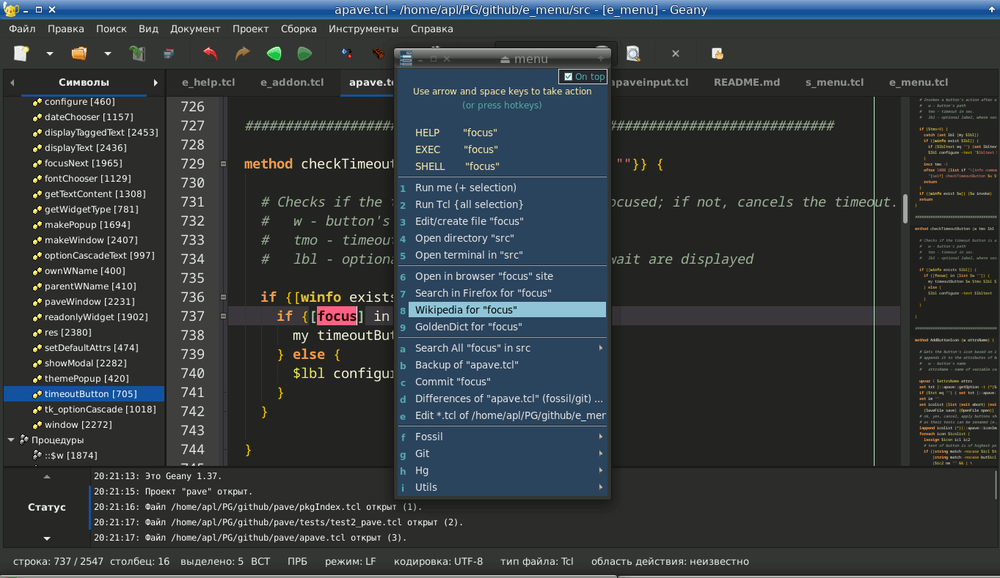
where the first line calls Tcl/Tk help for “selection” (i.e. foreach, string, grid, panedwindow etc. - about 200 Tcl/Tk man pages and 26 pages of Tcl keywords from A.htm to Z.htm).
This screenshot would be different for official Geany. For example, you may see menu.mnu instead of a current file's name. The reason is that official Geany doesn't provide any of %f, %d etc. wildcards for its context command. Below this issue is considered, with advices how to fix it.
Note: In Geany's Edit/Settings you can map F1 key to the context action and call it with one keystroke.
Calling e_menu
The command to call e_menu is following:
tclsh e_menu.tcl [s=%s] [m=menufile] [options]
where any argument in brackets may be omitted, but one (or both) of s= or m= argument must be present. If not, e_menu puts out a message with its synopsis and ends up.
s= argument refers to a selected text, though it may be anything else to process as 'selection'. If s= is set, e_menu's menu includes the following three commands:
- HELP 'selection'
- EXEC 'selection'
- SHELL 'selection'
that mean:
- HELP calls Tcl/Tk context help for 'selection'
- EXEC executes 'selection' as a command/program by itself
- SHELL executes 'selection' as a command/program in console box
m= argument refers to a name of file containing a menu of commands. If m=menufile is set, e_menu adds to those three commands (if present) also the menufile's commands.
If s= argument is not set then the menufile's commands only are present in the menu. If both s= and m= are set then all commands are present in the menu, i.e. HELP/EXEC/SHELL and the menu file commands.
You can always pass a selection as s0= argument and get rid of those abominable 'HELP/EXEC/SHELL' forever.
A special -remain option may be useful when you want e_menu to stay on the screen. If -remain 1 is passed to e_menu, you can go through all menu hierarchy down and up. Thus, only with pressing Escape key on the root menu.mnu you close e_menu application.
- number means integer value
- “string” means text value
Note: It's strongly recommended to quote “string option”.
The options are:
| Option | Description | Usage |
|---|---|---|
| “s=selection” | selected text of edited file | in Geany's context command: "s=%s" |
| “m=menu.mnu” | menu file that will be first displayed at calling e_menu | “m=fossil.mnu” |
| “md=directory” | directory containing e_menu menus
(by default, menus subdirectory of installed e_menu) useful when you have your own menus and do not want to mix with e_menu installation's files | “md=/home/me/.config/e_menu_menus” |
| “PD=directory” | project directory that can be used in commands as %PD wildcard
(by default equals to 'working directory') | “PD=/home/me/my projects/proj1” |
| “PD=dirlist.txt” | file containing a list of project directories that can be used in commands as %PD wildcard | “PD=/home/me/my projects/proj_dirs.txt” |
| “PN=project-name” | current project name that can be used in commands as %PN wildcard (by default equals to a tailing part of working directory path or PD= if set) | “PN=myproj1” |
| “f=file” | current edited file's name | in Geany's context command: "f=%d/%f" |
| “d=directory” | current edited file's directory | in Geany's context command: "d=%d"
"d=/home/me/my projects/proj1/src” |
| “e=filename” | current edited file's name (without path and extension) | in Geany's context command: "e=%e" |
| l=number | line number at the current cursor position | in Geany's context command: "l=%l" |
| “p=directory” | base path from the project (Geany wildcard) | in Geany's context command: "p=%p" |
| “h=path” | path to offline Tcl/Tk help | "h=/home/me/DOC/www.tcl.tk/man/tcl8.6" |
| “b=browser” | browser to be used for viewing Tcl/Tk help (also used in a menu command ”%B link“) | b=/usr/bin/epiphany |
| “ed=editor” | editor
used as %E command in menus (by default, e_menu's internal editor is used) | “ed=C:/Program Files (x86)/Notepad++/notepad++.exe” also, something like “z1=editor” can be used in e_menu call and %z1 file.txt in menus |
| pa=number | pause (in milliseconds) to suspend e_menu before starting it; sometimes it may be desirable | pa=500 |
| "n=string" | title of menu | "n=< e_menu >" |
| "co=string" | additional continuator for menu items | "co= \" by default
"co=;" adds ";" for line continuation: S: Shell script S: ? \ if [ $? -ne 1 ]; then \ echo "going up from: $(pwd)"; cd ..; echo ".......... to: $(pwd)"; fi
|
| t=1 | sets a menu as a topmost window on screen | t=1 |
| dk=string | sets a menu type (for Linux OS) | dk=dialog (with window's title) dk=dock (without window's title) dk=desktop (places a menu on the desktop) |
| g=+X+Y | (X,Y) screen coordinates of menu | g=+700+200 |
| wc=1 | centers a menu on screen | wc=1 |
| fs=number | size of fonts used in menu | fs=9 by default |
| “f1=font” | name of font used in menu header | “f1=Liberation Sans” |
| “f2=font” | name of font used in menu entries | “f2=Liberation Mono” |
| “f3=font” | name of font used in text widgets | “f3=Noto Sans Mono” |
| w=number | width of menu items (in characters) | w=30 |
| c=number | index of color scheme (-2 through 47) | c=-2 by default ("no CS") c=-1 ("basic CS", very similar to default) c=36 ("MildDark CS") |
| fg=#number bg=#number fE=#number bE=#number fS=#number bS=#number fM=#number bM=#number hh=#number cc=#number | colors (hexadecimal numbers) of
foreground and background of e_menu, editor's, selection's, popup menu's, header's and
cursor (to override a color scheme's colors) | cc=#ff0000 |
| sh=number | allows shadowing a menu when it loses a focus | sh=0 by default sh=1 |
| o=number | ornament
(view mode): o=-2 - none o=-1 - top line only (default) o=0 - Help/Exec/Shell o=1 - Help/Exec/Shell + header o=2 - Help/Exec/Shell + prompts o=3 - all | o=2, o=3 are best viewed when f2=Mono is set (font of items is of "Mono" family) |
| b0=number | border width of menu items | b0=0 by default |
| b1=number | internal vertical padding of menu items | b1=1 |
| b2=number | internal horizontal padding of menu items | b2=1 |
| b3=number | external vertical padding of menu items | b3=1 |
| b4=number | external horizontal padding of menu items | b4=1 |
| “u=string” | string will have " " replaced by "_" when used as %u wildcard in menu | “u=%s” by default |
| “+=string” | string will have " " replaced by "+" when used as %+ wildcard in menu | “+=%s” by default |
| “qq=string” | string will have quotes (”) escaped when used as %qq wildcard in menu | “qq=%s” by default |
| “dd=string” | string will have special symbols (“, $, %, {}, [], <>, *) deleted and spaces converted to “_” when used as %dd wildcard in menu | “dd=%s” by default |
| “ss=string” | string will have leading and tailing spaces stripped when used as %ss wildcard in menu | “ss=%s” by default |
| “s0=string0” “s1=string1” -”-“- “s9=string9” | strings used in commands as %s0, %s1, …, %s9 wildcards | “s0=%s” can be used when it's desirable
to process the selection (%s) without having those HELP/EXEC/SHELL commands in menu;
other arguments (s1, …, s9) can contain environment variables or their combinations |
| “u0=string0” “u1=string1” -”-“- “u9=string9” | the same as s0…s9 strings modified so that all spaces are converted to “_” | “u1=%s-1st” |
| i0=number i1=number -”-“- i9=number | initial values for %i0, %i1, …, %i9 wildcards that mean counters of runs of corresponding commands; these wildcards are used both in commands and their menu names | i1=100 i2=200
useful in a command that should have been passed a counter of its runs; a corresponding menu is supposed to stay on the screen |
| t0= .. t9= | formats of date/time that are used in commands containing %t0, %t1, %t2, %t3 .. %t9 wildcards: | defaults are: “t0=%H:%M:%S” - format of time “t1=%Y-%m-%d” - format of date “t2=%Y-%m-%d_%H:%M:%S” - format of date and time “t3=%A” - format of day of week t4= t5= .. t9= - after being defined they can be used as %t4..%t9 wildcards in commands |
| “a0=Tcl command(s)” | Tcl command(s) to be run at start of e_menu before any processing of other arguments (m= including, that may be potentially buggy) | “a0=D starting e_menu” |
| “a1=Tcl command(s)” | Tcl command(s) to be run at start of e_menu before processing a=list (see below)
";" may be used as dividers of commands | “a1=wm attributes . -alpha 0.8”
"a1=if {![Q Continue? {Do you want to continue\nwith e_menu?} okcancel warn OK -ontop 1]} exit" "a1=if {![set ::MYN [Q Continue? {Run TKE at starting e_menu?} yesnocancel warn NO -ontop 1]]} exit ; if {$::MYN==1} {append ::em::autohidden ,4}" |
| “a2=Tcl command(s)” | Tcl command(s) to be run at start of e_menu after processing a=list (see below)
";" may be used as dividers of commands | “a2=M {Hello! \n\n Today is [clock format [set systime [clock seconds]] -format {%A %d-%m-%Y %H:%M}] \n\n Current dir: [pwd]}“ |
| a=list | list of hotkeys of menu items to be run at start of e_menu | a=1,8,b |
| ah=list | list of hotkeys of menu items of [HIDDEN] section to be run at start of e_menu | ah=1,2,3
the items of [HIDDEN] section have hotkeys in the same manner as [MENU], i.e. 1,2,3,4,5,6,7,8,9,a,b,c,d,e,f,g,h,...,x,y,z,A,B,C,...,Z |
| ex=list | list of hotkeys of menu items including [HIDDEN] section to be run by e_menu
which might be useful to run some command(s) of a menu, without displaying it | ex=1,2,h,h1,h5,hh
where "1,2,h" mean [MENU] section's hotkeys, while "h1,h5,hh" refer to the 1, 5, h hotkeys of [HIDDEN] section |
| P=syms | symbol(s) used instead of ”%” in e_menu call | It's important if the caller of e_menu (Geany, shell) uses % literals conflicting with e_menu's arguments. Example of overcoming Geany's %d substitution: tclsh e_menu.tcl “s=%s” P=# “t2=#A #d-#m-#Y #H:#M” |
| “x*=string” | %x0 - %x9 wildcards in commands | “x0=%s” “x9=%s” |
| “y*=string” | %y0 - %y9 wildcards in commands | “y0=%s” “y9=%s” |
| “z*=string” | %z0 - %z9 wildcards in commands | “z0=%s” “z9=%s” |
| “om=0” | om=0 overrides the [OPTIONS] menu options (by default [OPTIONS] options overcome the options defined in the call string of e_menu) | om=0 |
| tg=WxH+X+Y | geometry of Linux terminal (width in columns, height in rows, position in pixels) | tg=80x24+200+200 by default |
| “tt=string” | command for Linux terminal
by default, e_menu uses lxterminal (if lxterminal not found, xterm is run) | "tt=xterm -fs 12 -geometry 90x30+400+100" |
| “wt=string” | command for MS Windows terminal | wt=cmd.exe by default wt=powershell.exe |
| “in=number” | firstly selected item of menu
if this option is set in [OPTIONS] section of menu file, specifically in the form: in=1.0 the e_menu will save and restore the last run position of menu | in=1 by default |
| “cb=string” | callback command being run after closing the menu | in a menu file:ME: Fossil ME: m=menus/fossil.mnu "cb=%cb in=%in"means the following actions: 1) after choosing "Fossil" item the fossil.mnu is called 2) the current menu closes 3) after some working the fossil.mnu closes 4) the previous menu is called back 5) the previous menu's "Fossil" item is selected |
| ln=number cn=number | line and column of current position in text buffer
these are important when an editor does not provide "a current word under caret" option for e_menu and, if at that it provides line and column numbers of editing point, you can use them so that e_menu will read the current word under caret and use it as %s wildcard if there is no selection | for PyCharm IDE the following arguments
ln=$LineNumber$ cn=$ColumnNumber$ are passed to e_menu |
| rt=number/number | sets ratio "min.width / init.width" for menu window | rt=3/5 by default |
| tc=string | sets Tcl/Tk executable's path | by default, e_menu uses [info nameofexecutable] to run commands starting with tclsh/wish
See also Running by tclkits below. |
| yn=1 | sets "Confirm exit" query when Escape key is pressed in e_menu | yn=0 by default |
| N=number | number (ID) of e_menu application; numbers from 1 to 64 are used to close neighboring menus | N=65 prevents a menu from destroying by others |
Note: Options s0..s9, u0..u9, x*, y*, z* can include wildcards used in menu commands, e.g.:
"s0= run #%i0 at %t2" "u0=_run_#%i0_at_%t2"
See also Processing wildcards below.
Setting options in menu files
Most options described above can be set in [OPTIONS] section of a menu file, as e.g. in this menu:
[OPTIONS] om=1 o=0 c=0 fs=11 w=52 in=1.0 h=/home/apl/DOC/www.tcl.tk/man/tcl8.6 PD=/home/apl/PG/Tcl-Tk/projects/e_menu b=/usr/bin/chromium [MENU] R: Firefox search for "%s" R: firefox -search "%s" R: Wikipedia for "%s" R:%B https://en.wikipedia.org/w/index.php?cirrusUserTesting=classic-explorer-i&search=%+ R: Open/create file(s) "%s" R:%E %s R: geany: edit all R: geany readme.md wiki.txt e_help.tcl e_menu.tcl R: R: 6 MW: Git MW: m=%PN/git.mnu "u=%s" o=0 w=50 MW: Tcl/Tk MW: m=%PN/tcltk.mnu w=20 MW: Python MW: m=%PN/python.mnu w=40 MW: Utils MW: m=%PN/utils.mnu MW: Links MW: m=%PN/links.mnu [HIDDEN] R: 1. Stop work R: ?-33*60?-7*60:ah=2? audacious /home/me/PG/breakon.wav R: 2. Arbeiten R: audacious /home/me/PG/breakoff.wav
The om= option is of particular weight. By default, the menu [OPTIONS] take priority over the options defined in a call string. This can be overridden by setting om=0 in the call string of e_menu - after that the call string options would have more priority than the menu [OPTIONS]. But all the same, the final decision is left to the menu that can reset the om= option to om=1 and override all previously set options of the call string or the parent menus.
Pay also attention to the in= option of [OPTIONS] section. If it is set in the form:
in=1.0
the e_menu will save and restore the last run position of menu.
Some options are intended rather for e_menu call string than for [OPTIONS] section. E.g. if you want to have a menu system 'project sensitive', do not include into [OPTIONS] such options as PD= (project directory) and PN= (project name). They are mostly for setting in a command line to call e_menu which is dynamic due to %d, %f etc. wildcards. Setting them in [OPTIONS] section you make them static.
And vice versa, if you want to have a specific menu iron bound to some project, include into its [OPTIONS] the PD=, PN= and om=1, as seen in the above example.
Setting options in environment
The last but not the least possibility for e_menu to receive options is an environment variable named E_MENU_OPTIONS.
It's mostly useful in command files run by shell. For example, in TKE, e_menu is run from
main.tcl (a plugin's main module) which defines most options of it. To avoid modifying the
main.tcl, we can define missing or redefine undesirable options in
E_MENU_OPTIONS variable:
#! /bin/bash
# ...some commands...
export E_MENU_OPTIONS="b=konqueror"
tke &
# ...other commands...
By this, TKE and its e_menu plugin can access the
value of b= option (name of browser).
Another consideration is about the options priority. The options of
E_MENU_OPTIONS variable are added to the beginning, to
the middle or to the end of e_menu's arguments. The above example sets
b=konqueror as default option being in the beginning of e_menu's arguments
list, i.e. having the lowest priority. We can set an index of included options, this way:
export E_MENU_OPTIONS="99 b=konqueror"
tke &
This sets b=konqueror at 99 position in the arguments list, most
likely in the end, i.e. having the highest priority. So, we can override some
arguments of main.tcl by E_MENU_OPTIONS variable, for example:
export E_MENU_OPTIONS="b=konqueror 99 fs=10 cc=red"
tke &
and the actual arguments of e_menu would look as follows:
"b=konqueror [...arguments set by main.tcl...] fs=10 cc=red"Here we set "font size = 10" (instead of default 9) and "cursor color = red" (instead of TKE color scheme's color).
As noted before, the [OPTIONS] in a menu file can overcome all options derived from e_menu's arguments.
Examples
Here are two examples of calling e_menu.
1.
tclsh /home/me/e_menu/e_menu.tcl "s=%s" "m=menus/menu.mnu" \ "h=/home/me/DOC/Tcl/tcl8.6" c=1 fs=11 \ "PD=/home/me/PG/projects/myprj" b=/usr/bin/epiphany a=6,b
- this call of e_menu consists of:
- selected text of an editor (%s)
- menu file named menus/menu.mnu
- color scheme equaled to 1
- font size equaled to 11
- working directory equaled to /home/me/PG/projects/myprj
(this would set PN=myprj as 'project name', used as %PN wildcard in commands) - browser equaled to epiphany
- "h=/home/me/DOC/Tcl/tcl8.6" means that Tcl/Tk help is offline and located in /home/me/DOC/Tcl/tcl8.6
- a=6,b sets two menu items to run at start, having their menu hotkeys '6' and 'b'
The menu.mnu file is located in menus subdirectory of e_menu not related anyhow to the PD= which is a separate option of call and used as %PD wildcard in menu commands.
2.
This bash file runs Geany IDE and e_menu application positioned at right side of screen:
#! /bin/bash DIR=/home/apl/PG/Tcl-Tk/projects/e_menu PROJECT=e_menu THEME="Preparing wiki" SUBJ=": calling e_menu" curdir=$PWD cd $DIR tclsh ~/.tke/e_menu/e_menu/e_menu.tcl \ "s0=$PROJECT" "x0=$EDITOR" "x1=$THEME" "x2=$SUBJ" "b=/usr/bin/epiphany" "PD=$DIR" "d=$DIR" \ md=~/.tke/plugins/e_menu/menus m=side.mnu g=+1484+25 t=1 o=0 w=16 pa=500 fs=10 ah=1,2 & geany readme.md wiki.txt e_help.tcl e_menu.tcl & cd $curdir
The menu is called as a topmost (t=1) independent application without ornament (o=0). Some options (PROJECT, THEME, SUBJ) are supplied to use in SCM commands as %s0, %x0 etc. wildcards. Geany IDE is run with project files as arguments.
Creating e_menu files
Structure of menu
The general structure of menu file is following:
[MENU] <marker> name1 <marker> command1 <marker> name2 <marker> command2 <marker> - <marker> <marker> name31 <marker> ? command31 <marker> name32 <marker> ?interval? command32 <marker> <marker> N <marker> name4 <marker> command41 <marker> name4 <marker> command42 <marker> name4 <marker> command43 # comments # ... [HIDDEN] 1. <marker> nameH1 <marker> command_H1 2. <marker> nameH2 <marker> command_H2 # ... [OPTIONS] # ... options of e_menu call string # ...
where <marker> can be one of following:
- R/
- R: these ones run command and e_menu continues working
- RE/
- RE: these ones execute command and e_menu exits
- RW/
- RW: these ones run command and e_menu waits its completion
- S/
- S: these ones run command in console box and e_menu continues working
- SE/
- SE: these ones execute command in console box and e_menu exits
- SW/
- SW: these ones run command in console box and e_menu waits its completion
- MW/
- MW:
- M/
- M: these ones call a child menu and a parent continues working (note: MW type is the same as M)
- ME/
- ME: these ones call a child menu and close a parent
- I: Tcl commands (incl. the internal e_menu functions M, Q, S, T)
The [MENU] line may be omitted if menu commands go first. It's used after [OPTIONS] if co= argument is set in [OPTIONS] (see test1.mnu for example).
Markers with ”/“ are the same as with ”:“; the one and only difference is that in their corresponding commands all “\” are converted to ”/“. It's only for use in Windows and only for convenience, because e_menu being written in Tcl recognizes only ”/“ as a dividing slash of directory name.
You can manually replace "\" with "/" in Windows' pathes and use R: and S: markers.
The lines:
<marker> - <marker> N <marker> <marker> Nare separators. The first form sets a horizontal line separator, the second form sets a blank separator. N means a height in conventional units. For example, to set a blank separator of 4 height, use:
R: R: 4
Normally commands are run without catching their errors or warnings. But if you want to see return messages of a command, you may set ”?“ before the command as in command31 above.
Also, you can run a command repeatedly with interval in seconds set as ?interval? before the command (see command32 above and details below).
A menu item can contain several commands to run. To enable this you should place them under the same item name in successive lines. There must be strongly equal names for e_menu to identify them as a batch of commands united under a menu item. Any differences including spaces and empty lines are treated as a begin of new command or comment.
In Geany editor, pressing Ctrl+D doubles a current line or selected text. In e_menu's internal editor, also there are hotkeys: - Ctrl+D to double a current line or selected text - Ctrl+Y to delete a current line - Ctrl+F to find first occurence of string - F3 to find next occurence of string - Ctrl+W to save and exit (all of them are available from popup menu)
For example command4 (see above) contains in fact three successive commands united under ” name4 “.
[HIDDEN] section of menu file is of the same format as the previous visible one. Now it is used only to autorun commands that aren't visible in menu. For example command5 and command6 (see above) can be run at start of e_menu with ah=1,2 call argument. Hidden items are numerated with 1,2,..,9,a,b,… as well as visible ones.
One important command used in a batch of commands is 'cd'. It is inevitable if you have some program that, being altogether useful and good, nevertheless innocently assumes a current directory to be its 'own' one.
Comments are lines that begin with anything different from <marker>. Use for comments any commenting symbols you like.
A menu item name can begin with F1 through F12 which means a hotkey F1…F12 for this name. By default, items have hotkeys 1 through 9, a through z and A through Z. For example:
RE: F1 Geany's help RE:%B file:///usr/share/doc/geany/html/index.html
- this would display e_menu that would display (after pressing F1) the help of Geany IDE and close.
It's useful feature if you mapped F1 to Geany context action - then double pressing F1 brings up Geany's help and closes e_menu.
An item marked with I: refers to some internals, namely the direct execution of Tcl commands. M, Q, S, T procedures of e_menu can be also used in I: items.
Important note: The I: item can be executed only standalone. It cannot participate in a batch of commands. So, the whole Tcl code should be presented in a one and only I: line to be executed. That said, you can use "\" as a line continuator and ";" as a command divider.
Here are few examples (note \$ and \n escaped for T):
I: Xterm in "%PD" I: S xterm -e bash
I: Xterm in "%PD" (queried) I: if {[Q "BASH" "Want to bash?"]} { cd "%PD"; exec xterm -e bash & }
I: Console commands I: M Three commands to be run in separate console boxes! ; \
T dir \n \
echo \$PWD \n \
date
Wildcards in menu names and commands
Item names and commands can include the following wildcards:
| Wildcard | Description |
|---|---|
| %s | an editor's selected text |
| %u | an editor's selected text underscored |
| %+ | an editor's selected text with ” “ converted to ”+“ |
| qq=
argument of e_menu in which all quotes
should be escaped e.g. "qq=%s" promotes %qq wildcard with quotes escaped |
|
| %dd | dd=
argument of e_menu from which all special characters
should be removed e.g. "dd=%s" promotes %dd wildcard without ", $, {, }, [, ], %, <, >, *, and spaces replaced by "_" |
| %ss | ss=
argument of e_menu (or %s
wildcard) stripped of leading and tailing spaces
e.g. to call a browser: %B %ss |
| %PD | a directory or a file passed as PD= argument to e_menu; when it is a file (e.g. PD.txt, the file contains a list of prject directories |
| %P2 | project's nickname which is set in PD.txt file as 2nd item |
| %PN | a tailing part of working directory or a project name passed as PN= argument to e_menu |
| %w | a working (current) directory |
| %m | a directory of e_menu |
| %ms | src subdirectory of e_menu's directory (e.g. to access src/s1.wav) |
| %t0 | a system time |
| %t1 | a system date |
| %t2 | a system date + time |
| %t3 | a system day of week |
| %s0 %s1 -”-“- %s9 | s0= argument of e_menu s1= argument of e_menu -”-“- s9= argument of e_menu |
| %u0 %u1 -”-“- %u9 | u0= argument of e_menu u1= argument of e_menu -”-“- u9= argument of e_menu |
| %i0 %i1 -”-“- %i9 | 0th counter of runs (it may be initialized with i0= argument of e_menu) 1st counter of runs (it may be initialized with i1= argument of e_menu) -”-“- 9th counter of runs (it may be initialized with i9= argument of e_menu) |
| %x0 %x1 -”-“- %x9 | x0= argument of e_menu x1= argument of e_menu -”-“- x9= argument of e_menu |
| %y0 %y1 -”-“- %y9 | y0= argument of e_menu y1= argument of e_menu -”-“- y9= argument of e_menu |
| %z0 %z1 -”-“- %z9 | z0= argument of e_menu z1= argument of e_menu -”-“- z9= argument of e_menu |
| %B “link” | calls a
browser with passed link; here %B corresponds to
b= argument of e_menu, e.g.
R: e_menu help R: %B https://aplsimple.github.io/e_menu/e_menu.html |
| %E filename | calls the
editor to edit/create a file, e.g. to edit a file of the editor's selection: R: edit "%s" file R: %E %s |
| %M message | puts out a
'message' (it may be not quoted), e.g.
R: Wow R: M What a wonderful world! |
| %Q “title” “message” |
puts out a query with title and message asking
“OK” or “Cancel” if answered “Cancel”, cancels next commands of batch, e.g. R: hg addremove * R: %Q "SURE?" "This will ADD & REMOVE all changes in:\n\n%PD" See also Warnings of menus. |
| %C commands | executes
Tcl commands, e.g. R:fossil diff ? R: %C if {![info exist ::EMENUCOMMIT]} {set ::EMENUCOMMIT ""} R:fossil diff ? R: %I ... some input dialog to get ::EMENUCOMMIT ... R:fossil diff ? R: %C if {"$::EMENUCOMMIT" eq ""} \ {set ::EMENUTMP ""} {set ::EMENUTMP "--from $::EMENUCOMMIT --to tip"} S:fossil diff ? S: fossil diff $::EMENUTMP |
| %S commands | executes
OS commands/programs can process a batch of commands divided with \n, e.g. R: Batch R: %S xterm -e bash \n nautilus %PD \n cd %PD \n my-softina |
| %f | f= argument of e_menu (a current edited file's name) OR a current menu file's name |
| %d | d= argument of e_menu OR directory name taken from %f wildcard |
| %e | e= argument of e_menu OR pure file name taken from %f wildcard |
| %F | F= argument of e_menu OR tail file name taken from %f wildcard |
| %F_ | %F wildcard underlined, i.e. with " " and "." changed to "_" |
| %D | D= argument of e_menu OR tail directory name taken from %f wildcard |
| %x | x= argument of e_menu OR file extension taken from %f wildcard |
| %p | p= argument of e_menu ("p=%p" means Geany's project directory) |
| %l | l= argument of e_menu (current line number, e.g. for Geany it would be l=%l) |
| %L | contents of the current line taken from l= argument of e_menu |
| %AR | It is contents of first one
of #ARGS:... #ARGS0:... #ARGS1:... comment lines of current file,
for example, having in mulster.tcl the following comments: #-ARGS0: -k 1 test/test12ini #ARGS1: -mode exact -backup 0 tasks/mulster-tke #-ARGS100: -mode exact -backup 0 tasks/mulster-geany we can perform "Run me" of menu.mnu to run the mulster.tcl in this manner: tclsh mulster.tcl -mode exact -backup 0 tasks/mulster-tke The first encountered #ARGS line is taken for %AR value. Thus, we need no selecting any "test cases" to run the test on the current edited file. We should only have an active #ARGS comment while others being disabled as #-ARGS, #--ARGS, #---ARGS etc. Starting from e_menu v3.0, #ARGS:, #ARGS0:, #ARGS1: etc. can be included in non-Tcl comments, e.g.: // C++ style comments; Run me with args - #ARGS0: -opt1 val1 -opt2 val2 Note: if some argument contains multiple words, it may need escaped or single quotes, e.g.: #ARGS0: -opt1 \"value of multiple words\" #ARGS0: -opt1 'value of multiple words' Though, it depends on the terminal. The lxterminal and xterm don't need this trick. See tt= option above. |
| %RF | It is contents of first one
of #RUNF:... #RUNF0:... #RUNF1:... comment lines of current file to execute a command,
for example, having in obbit.tcl the following comments: #RUNF1: ./tests/test2_pave.tcl 20 11 12 we can perform "Run me" of menu.mnu to run the test2_pave.tcl in this manner: tclsh ./tests/test2_pave.tcl 20 11 12 The first encountered #RUNF line is taken for %RF value. While in menu.mnu #ARGS string is used with a current file name, #RUNF string is used "as is" and may refer to some file (not the current). It may provide "a space for manoeuvre" with using #ARGS in one case and #RUNF in another case. Say, one edited file may require to be run with #ARGS, while other file - with #RUNF. Starting from e_menu v3.0, #RUNF0:, #RUNF1: etc. can be included in non-Tcl comments, e.g.: /* C style comments: Process somefile with args - #RUNF0: somefile -opt1 val1 -opt2 val2 */ Note: If some argument contains multiple words, it may need escaped or single quotes, e.g.: #RUNF1: ./tests/test2_pave.tcl 0 13 12 \"middle icons\" #RUNF1: ./tests/test2_pave.tcl 0 13 12 'middle icons' Though, it depends on the terminal. The lxterminal and xterm don't need this trick. See tt= option above. Note: #EXEC: comments allow to set any command to run in a terminal, e.g. #EXEC: ~/UTILS/processMe ./tests/test2_pave.tcl |
| %P | goes before a
command and prepares it by inserting environment variables' values, e.g.
R: edit ~/.hgrc R: %P %E $::env(HOME)/.hgrc |
| %#s command | sets a command to be edited up to the whole script for shell
Here s stands for any unique (in a current menu) symbol. See an example in grep.mnu called through "Menu / Search All / GREP TEMPLATE" where %#t is used in the following menu item: S: GREP TEMPLATE: '%s' S: %#t grep -H -n -I -s -i -d recurse * -e '%s' |
| %I ques “title” options == ::globvar | Puts out a dialog asking to enter a value; if answered “Cancel”, cancels next commands of batch. See details in Input dialogs. |
| %TT | command for Linux terminal |
%% | % symbol |
Processing wildcards
Wildcards of names and commands are processed in the following order:
- %PD
- %PN
- %s0, %s1, …, %s9
- %u0, %u1, …, %u9
- %+
- %qq
- %dd
- %ss
- %w, %m
- %s
- %u
- %t0, %t1, %t2, %t3
- %i0, %i1, …, %i9
- %x0, %x1, …, %x9
- %y0, %y1, …, %y9
- %z0, %z1, …, %z9
Wildcards %s0 … %s9, %u0 … %u9 can delegate their values to lower levels (from %s0 down %u9).
For example:
"s1= %s committed #%i1 at %t2" "u1=%s1"
is equivalent to:
"s1= %s committed #%i1 at %t2" "u1=_%s_committed_#%i1_at_%t2"
In some cases, it may be desirable to have an hierarchy of substitutions.
For example:
"s1= Theme 1" "s2=%s1.2" "s3=%s2.3" "s4=%s3.4"
is equivalent to:
"s1= Theme 1" "s2= Theme 1.2" "s3= Theme 1.2.3" "s4= Theme 1.2.3.4"
Input dialogs
Probably, most obscure is the %I wildcard. It uses apaveObject input basically and allows to enter values of Entry, Checkbox, Radiobutton etc. The returned values can be multiple and are listed after ==.
Let's consider a few of examples of its usage.
1.
In this example from hg.mnu, a file name is entered manually or chosen from a file chooser.
# entering a file name to view the file's changes since a last commit
R: kdiff3 of %F R: cd %PD
R: kdiff3 of %F R: %C if {![info exist ::FIL1] || $::FIL1==""} {set ::FIL1 "%f"}
R: kdiff3 of %F R: %I ques "KDIFF3" {filName {{File:} {} {-w 60}} {"$::FIL1"} lab} \
-head "\n Enter/choose a file to kdiff3" -weight bold == ::FIL1
R: kdiff3 of %F R: hg extdiff -p kdiff3 "$::FIL1"
The dialog line by line:
%Cline initializes the variable for file name
- in
%Iline we run the input dialog, where each line excepting the last is terminated with " \" which is a line continuator
quesstands for question icon (others are info, warn, err, "")
KDIFF3stands for a title of dialog window
filNamestands for a field name of entering/choosing file;
it sets also the type of field (entry + file chooser)
{File:}is the prompt
{}stands for options of pack command
{-w 60}stands for options of ttk::entry command, here a width
{{File:} {} {-w 60}}are all options of entry field
{"$::FIL1"}stands for passed value of the filName field
(note that quotes are necessary as a file name can contain spaces)
labstands for ttk::label, it's last in the list, so its options are omitted;
lab just separates File: from buttons, it's a pure ornamental detail
- the rest are options for heading message (-head, boldness)
== ::FIL1stands for variables receiving input (here only one)
This example produces the following picture:
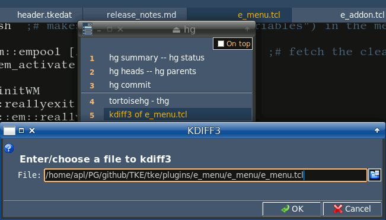
2.
In this example from menu / utils / test1.mnu, more field types are used: Label, Entry, Radiobutton, Checkbutton, Combobox, Text, Listbox, Option Cascade, Tablelist:
R: Input dialog R: %C if {![info exist ::EN2]} {set ::EN2 ""; set ::V1 Exact}
R: Input dialog R: %C if {![info exist ::C1]} {set ::C1 [set ::C2 0]}
R: Input dialog R: %C if {![info exist ::W1]} {set ::W1 "in file"}
R: Input dialog R: \
%I "" "TEST OF %I" { \
ent1 {{ Find: }} {"$::EN1"} \
ent2 {{Replace: }} {"$::EN2"} \
labo {{} {} {-t {\nOptions:} -font {-weight bold}}} {} \
radA {{Match: }} {"$::V1" {Exact} {Glob} {RE }} \
seh {{} {} {}} {} \
chb1 {{Match whole word only}} {$::C1} \
chb2 {{Match case }} {$::C2} \
seh2 {} {} \
v_ {} {} \
cbx1 {{Where: } {} {-state readonly}} {"$::W1" {in file} {in session} {in directory}} \
tex1 {{Any text:} {} {-h 3 -w 50 -wrap word -tabnext lbx1}} {$::TEX} \
lbx1 {{Related: } {} {-h 3}} {"$::LBX" {my Father} Mother Son Daughter Brother Sister Uncle Aunt Cousin {Big Brother} "Second cousin" "1000th cousin"} \
opc1 {{Color: }} {{$::OPT} {{color red green blue -- {{other colors} yellow magenta cyan \
| #52CB2F #FFA500 #CB2F6A | #FFC0CB #90EE90 #8B6914}} \
{hue dark medium light} -- {{opc widget example}} ok}} \
tblSEL1 {{Table: \n\nThe 'tbl' name\nis tblSEL* to\nreturn an item} {} {-h 4 -columns {16 {Name of widget} left \
0 Type left 0 X right 0 Y right} }} {"$::TBL" {"but" "ttk::button" 1 1} \
{"can" "canvas" 3 3} \
{"chb" "ttk::checkbutton" 4 4} \
{"cbx fco" "ttk::combobox" 23 2} \
{"ent" "ttk::entry" 212 6}} \
} \
-head "Enter data:" -weight bold == ::EN1 ::EN2 ::V1 ::C1 ::C2 ::W1 ::TEX ::LBX ::OPT ::TBL
The dialog line by line:
R: Input dialog R: %C ...lines initialize the variables used in the dialog and commands afterwards. The dialog's variables can be also set in [OPTIONS] section, with two methods.ent1andent2stand for ttk::entry fields to enter the Find and Replace values.
labofield (ttk::label) is labeled as "Options:" (this may include \n to set blank rows), of bold font.
radAstands for ttk::radiobutton;
choices are listed after its value (quoted because of {RE } containing a space).
sehis a horizontal separator.
chb1andchb2are checkboxes.
v_is a vertical spacer.
cbx1is a combobox.
tex1is a text widget.
lbx1is a listbox.
opc1is an option cascade widget.
tblSEL1is a tablelist widget.
== ::EN1 ::EN2 ::V1 ::C1 ::C2 ::W1 ::TEX ::LBX ::OPT ::TBL
is a list of input variables; after "OK" they will get their input values.
Note: for more security it's recommended to use uppercased names of variables, i.e. ::EN1 instead of ::en1 etc. Though e_menu uses the global variables (a few), none of them is uppercased.
This example produces the following picture:
3.In this example from hg.mnu, Entry, File Chooser and Text fields are used, the text widget being read-only (due to
-ro 1option).
This menu item allows to dig the file's differences down to a desirable level.R: hg extdiff %F R: cd %d R: hg extdiff %F R: %C if {![info exist ::REV]} {set ::REV -1} R: hg extdiff %F R: %C if {![info exist ::FIL]} {set ::FIL "%f"} R: hg extdiff %F R: \ %I "" "DIFFERENCES" { \ v_0 {{} {-pady 7} {}} {} \ ent1 {{Revision: } {} {}} {"$::REV"} \ filName {{ of file: } {} {-w 65}} {"$::FIL"} \ v_1 {{} {-pady 7} {}} {} seh {{} {} {}} {} v_2 {{} {} {}} {} \ texc {{hg help: } {} {-h 4 -w 52 -ro 1}} {A plain integer is treated \ as a revision number.\nNegative integers are treated as sequential offsets from the \ tip, with -1 denoting the tip, -2 denoting the revision prior to the tip, and so forth.} \ } -head "\n Enter a revision (a prior commit's number):" -weight bold == ::REV ::FIL R: hg extdiff %F R: hg extdiff -r $::REV -p meld $::FILThis example produces the following picture shot in TKE editor:
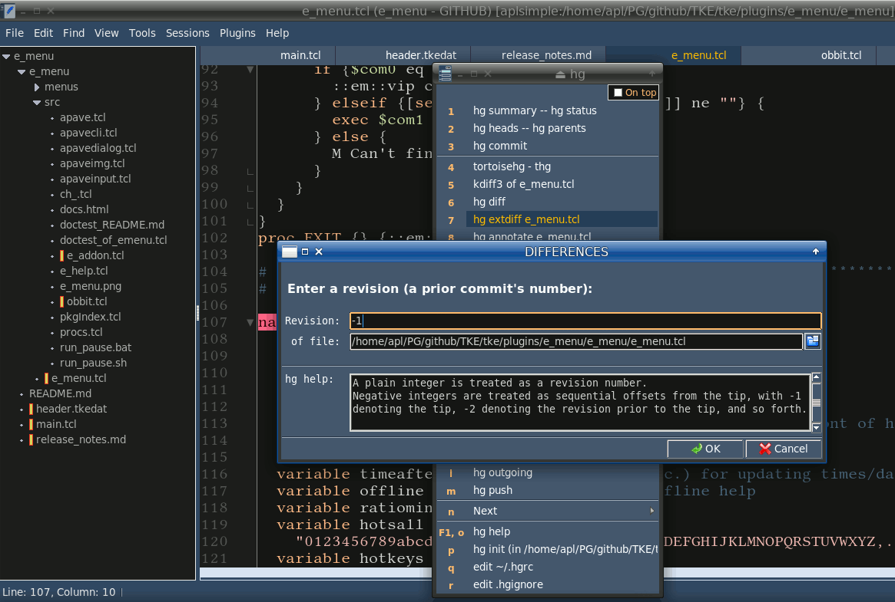
Warnings of menus (Q command)
The Q command can be used in menus as a part of %C wildcard's content. The %Q wildcard uses the same syntax.
The %C Q and %Q both display warning dialogs.
Syntax:
%C Q ttl msg {typ okcancel} {icon warn} {defb OK} args %Q ttl msg {typ okcancel} {icon warn} {defb OK} argswhere:
ttl - title of query
msg - message of query
others may be omitted:
typ - type of dialog: one ofokcancel(default),yesnooryesnocancel
icon - type of icon: one ofwarn(default),info,quesorerr
defb - selected default button: one ofOK(default),CANCEL,YESorNO
args - additional options for APaveDialog dialogs, e.g.-ch "Do not show again"Using a1= call argument, you can warn a user about potential risks of an open menu, e.g.:
MW: Dangerous MW: m=git2.mnu w= fs=50 c=5 "a1=if {![Q {DANGER!} \ {These commands are dangerous\nand can set the world on fire! \ \n\nContinue?}]} exit"Here the Tcl commands are used to exit and close the dangerous menu possibly open by mistake. Q is a query with “head” and “message” that can contain wildcards like %s, %f. Q returns "false" if answered "Cancel" so that exit command closes the menu.
In a menu item, you can use %Q “head” “message”. It's the same query with the difference that e_menu stops executing the menu item after answering 'Cancel'. For example:
R:git reset --hard HEAD R: %Q "RESET" \ "This cancels the last uncommitted changes and resets \ \nto the last commited state!\n\nDo you want to RESET ? \ \n\n(VERY LIKELY IT'S CANNOT BE UNDONE)" R:git reset --hard HEAD R: cd %PD S:git reset --hard HEAD S: git reset --hard HEAD
- here the cancelled commands are
cdandgit reset.
Usage of initializing code and variables in menus
In the examples above, %C wildcard was used to initialize variables of input dialogs and commands.
If some initializing code is duplicated in a menu's items, it makes sense to move it into [OPTION] section, using %C wildcards in the same manner. This %C Tcl code would be executed at opening the menu. It may contain any number of Tcl commands devided with ";" or continued with "\".
For example, fossil.mnu uses this feature to discern two ways of its calling:
[OPTION] %C if {{%F}=={*} && ![info exist ::EMENUFILE]} {set ::EMENUFILE "*"} %C if {![info exist ::EMENUFILE]} {set ::EMENUFILE "%f"}Also, if you want to have a set of variables used throughout the whole menu and saved (possibly) between the menu sessions, you'd find it convenient to define them in [OPTIONS] section. Specifically, the example of previous section can be rewritten this way:
R: Differences of %F (hg extdiff) R: cd %d R: Differences of %F (hg extdiff) R: \ %I "" "DIFFERENCES" { \ v_0 {{} {-pady 7} {}} {} \ ent1 {{Revision: } {} {}} {"$::REV"} \ filName {{ of file: } {} {-w 61}} {"$::FIL"} \ v_1 {{} {-pady 7} {}} {} seh {{} {} {}} {} v_2 {{} {} {}} {} \ texc {{hg help: } {} {-h 3 -w 52 -state disabled}} {A plain integer is treated \ as a revision number.\nNegative integers are treated as sequential offsets from the \ tip, with -1 denoting the tip, -2 denoting the revision prior to the tip, and so forth.} \ } -head "\n Enter a revision (a prior commit's number):" -weight bold == ::REV ::FIL R: Differences of %F (hg extdiff) R: hg extdiff -r $::REV -p meld $::FIL ... [OPTIONS] ::REV=-1 ::FIL=%f ...Thus, in [OPTIONS] you can set any variables that you may use everywhere in the menu's commands and input dialogs.
The variables' values are saved from one session to another, excluding those variables that contain % initial of wildcards. Above, the ::REV variable is initialized to -1 and saved for next menu sessions while ::FIL is always initialized with %f wildcard's value and saved only for a current menu session.
The e_menu detects the variables in [OPTIONS] by their glob template of "::*=*". You cannot use constructs sort of myVar=10. Instead, use ::MYVAR=10. This means that you are prompted to use global variables.
Note: for more security, it's recommended to use uppercased names of variables, i.e. ::MYVAR instead of ::myVar etc. Though e_menu uses the global variables (a few), none of them is uppercased.Another hint is about temporary files:
Use the %mn.tmp~ template for temporary file names!For example:
[OPTIONS] ::EMENUTMPFILE=%mn.tmp~
By this, you would provide a unique temporary file name per menu.
Second profit is that e_menu at exiting would remove the *.tmp~ files from menus directory, so you need not worry about this clearance.The following color names may be useful in .mnu files, e.g. to set a message color (see e.g.
-hfg $::em::clrhotkin fossil.mnu):::em::clrhotk- foreground of hot keys::em::clractf- foreground of active item::em::clractb- background of active item::em::clrinaf- foreground of inactive item::em::clrinab- background of inactive item::em::clrtitf- foreground of title ("Use arrow...")::em::clrtitb- background of title::em::clrhelp- foreground of HELP/EXEC/SHELL::em::clrgrey- background of greyed menu
Running shell scripts as a single menu item
1. Nice way:
My Italian colleague Flavio had suggested the following usage of "S:" menu item: it can include the whole shell script!
It means no files on disk to perform bash scripts in e_menu!The following example makes it clear:
S: Shell script S: ? \ err=1; cd ~/FOSSIL; \ # make a cycle till not found \n \ while [ $err -eq 1 ]; \ do repo=$(find *.fossil 2>/dev/null ); \ err=$?; \ if [ $err -eq 1 ]; then \ if [ $(pwd) = '/' ]; then \ echo "repo non esistente" ;break; \ fi; \ cd ../; \ else \ echo "$(pwd)/${repo}"; \ fi; \ doneThis script finds all *.fossil files in a directory and echos their names.
This item of test1.mnu is available through "Menu / Utils / Test1 / Shell script". The actual item is somewhat different as for using co=; in [OPTIONS] to simplify things (";" and "; \" mean the same continuator of line).
Note:
- The "?" before the script allows to see any errors that would occur during its execution.
- The terminating "\" serves as a mark of line continuation.
- The "cd" command should go after first command if you make a script. Let it be any innocent command, sort of "tmp=0" (in this example it is "err=1").
When e_menu comes into "cd " at beginning of any command, it considers the rest as a directory name (and swallows it silently if it's not a directory).
- Comments in scripts are terminated by "\n \" in order to run next commands.
A real life usage of this feature is available here: How to minimize the Mercurial SCM history of binary files.
2. Another nice way:
Perhaps, the preferable scripting way of e_menu would be through %#X wildcard where X may be any character unique for different dialogs of the menu.
It's well seen in test1.mnu, where the line:S: Shell script-2 S: %#s err=1; cd ~/FOSSIL
means that the command (err=1; cd ~/FOSSIL) would be edited in an editor. At that you can extend the command up to the whole shell script.With this method, the previous script can be edited as a regular bash script:
# this script is run with %#s wildcard in test1.mnu # it does the same as the previous "Shell script" err=1 cd ~/FOSSIL while [ $err -eq 1 ] do repo=$(find *.fossil 2>/dev/null ) err=$? if [ $? -eq 1 ]; then if [ $(pwd) = '/' ]; then echo "repo non esistente" ; break fi cd ../ else echo "$(pwd)/${repo}" fi doneThis item of test1.mnu is available through "Menu / Utils / Test1 / Shell script-2".
See also another example in grep.mnu available through "Menu / Search All / GREP TEMPLATE".
Macros
The macros allow to get rid of repetitions in .mnu files.
If some code is repeated in several places of menu, it would be a good candidate for a macro. For example, let our menu code be as follows:
R:fossil forget $::FILETAIL R: %I {} "FORGET FILE" { \ v_ {{} {-pady 4} {}} {} \ fil1 {{ File:} {} {-w 70}} {"$::EMENUFILE"} \ } -head {\n This will forget a file in the Fossil repository. \ \n Use wildcards to forget a few.} -hfg $::em::clrhotk -weight bold == ::EMENUFILE S:fossil forget $::FILETAIL S: fossil forget $::EMENUFILE... and it's repeated for some fossil commands (forget, revert, add, remove etc.). The only differences are: 1) title 2) message 3) command.Then, we can build %M1 macro like this:
%M1 TITLE %M1 MESSAGE %M1 COMMAND %M1 R: %I {} "$TITLE" { \ v_ {{} {-pady 4} {}} {} \ fil1 {{ File:} {} {-w 70}} {"$::EMENUFILE"} \ } -head {\n $MESSAGE} -hfg $::em::clrhotk -weight bold == ::EMENUFILE %M1 S: fossil $COMMAND $::EMENUFILEThus, for forget, revert, remove, add commands, we can use the code:
R:fossil forget $::FILETAIL R: %M1 FOSSIL FORGET %M1 This will forget a file... %M1 forget R:fossil revert $::FILETAIL R: %M1 FOSSIL REVERT %M1 This will revert a file... %M1 revert R:fossil remove $::FILETAIL R: %M1 FOSSIL REMOVE %M1 This will remove a file... %M1 remove R:fossil add $::FILETAIL R: %M1 FOSSIL ADD %M1 This will add a file... %M1 add
The first
%M1 TITLE %M1 MESSAGE %M1 COMMANDline sets the macro's parameters used in its body ($TITLE, $MESSAGE, $COMMAND). The corresponding arguments are set at the macro evaluation, e.g. this way:%M1 FOSSIL FORGET %M1 This will forget a file... %M1 forget.This first line of macro may be empty (
%M1), but it should go first in the macro code, all the same.Other lines of macro should contain:
- macro name of %M? form (%M0 through %M9, %Ma through %Mz, %MA through %MZ, %M~, %M!, %M@, %M# and so on)
- type of line (R:, S:, RE:, SW: and so on)
- content of line (any stuff used in menu's lines, including "\" as a continuation mark)
Examples
1.
e_menu being written in Tcl requires ”/“ in pathnames. So, in order to avoid manual converting “\” to ”/“, items are marked with “R/” instead of “R:”, “RW/” instead of “RW:” and so on. It's used only in Windows.
Here is an example:
# menu for e_menu R/ GoldenDict R/ "C:\Program Files (x86)\GoldenDict\GoldenDict.exe" R/ FVdict for "%s" R/ cd C:\Program Files (x86)\FVdict RW/ FVdict for "%s" RW/ fvdict.exe %s R/ Tclsh "samples/%s.tcl" R/ tclsh "C:\PG\Tcl-Tk\examples\Proj01\%s" S/ Tkcon S/ tkcon R: Firefox search for "%s" R: firefox -search "%s" R: Wikipedia for "%s" R: %B https://en.wikipedia.org/w/index.php?cirrusUserTesting=classic-explorer-i&search=%+ MW/ Git menu MW/ "m=menus\gitmenu.txt" o=0 "PD=%d" "s=%s"
A menu item FVdict for ”%s“ consists of two commands: the first one sets current directory of command, the second executes it (and wait its completion).
Notice that the command 'cd' does not require quoting directory path, because it's executed by e_menu that adds missing quotes. Other commands with spaced pathnames need quoting them.
Also notice how WWW searches are called for Firefox search machine and for Wikipedia: "%+" is the same as "%s" with spaces replaced by "+".
A last item calls and then waits for a git menu that is in the example below.
2.
Most commands in this menu need changing to a project's directory, so 'cd' is first used in a batch of commands.
The command batches contain mixed 'R' and 'S' markers which means that their commands are executed by itself and by shell in console box.
The wildcard %s refers to the editor's selection. The wildcard %dd is the same as %s but it's used to get rid of special symbols as ”, $, %, {, }, [, ], <, >, *.
The wildcard %M shows a message.
The wildcard %Q shows a query with 'title' and 'query text'. Being answered 'Cancel' it cancels the execution of batch.
In %Q command you should use edging double quotes and internal single quotes in a title and a message. Symbol \n stands for an empty line.
# git menu for e_menu R:nautilus command R: %M Now the nautilus file manager should go to %PD directory. R:nautilus command R: nautilus "%PD" S:git status S: cd %PD S:git status S: git status R:git gui R: cd %PD R:git gui R: git gui S:git add * S: cd %PD S:git add * S: git add * S:git commit -m "%dd" S: cd %PD R:git commit -m "%dd" R: %Q "Committing changes" "Commit with message\n\n'%dd' ?" S:git commit -m "%dd" S: git commit -m "%dd" S:git commit -am "%s" S: cd %PD R:git commit -am "%s" R: %Q "Committing changes" "Add and commit with message\n\n'%s' ?" S:git commit -am "%s" S: git commit -am "%s" S:git log "--since=1 day ago" S: cd %PD S:git log "--since=1 day ago" S: git log "--since=1 day ago" R:git log -p "--since=1 day ago" R: cd %PD S:git log -p "--since=1 day ago" S: git log -p "--since=1 day ago" MW: Others MW: m=menus/git2.mnu w=40
Detailed example
The following example illustrates step by step how to create and use e_menu in Windows. Linux version is mostly the same and even more simple than Windows'.
Step 1. Initial testing.
It's assumed that you had installed Tcl/Tk and e_menu software. If not, refer to Introduction.
It's also assumed in the next sections that e_menu has been unpacked into C:\UTILS\e_menu directory. The example deals with Geany IDE.
To start from scratch, the Geany's context command would be as follows:
tclsh C:\UTILS\e_menu\e_menu.tcl "s=%s"
Try e_menu now. Set the caret on a word of your text edited in Geany IDE. You may also select a piece of text. Call 'Context action' from popup menu or with a hotkey mapped to it.
You should see the following:
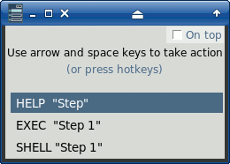
(in this example 'Step 1' was selected in Geany editor).
If you see it, e_menu works OK. Well, if you are not Tcler then skipping the rest of this step would not harm you badly.
The first line of the picture above means calling a context help on Tcl/Tk command or keyword you had selected.
The help is online. You can tune it to be offline for faster response and zero of Internet. To do it try this:
- include the h= argument into Geany context action:
tclsh C:\UTILS\e_menu\e_menu.tcl "s=%s" h=C:\DOC\www.tcl.tk\man\tcl8.6
- download the Tcl/Tk help to C:\DOC directory with commands:
md C:\DOC cd C:\DOC wget -r -k -l 2 -p --accept-regex=.+/man/tcl8\.6.+ https://www.tcl.tk/man/tcl8.6/
Now the offline help should be ready to call. If not, check the version of your wget utility.
Retry Tcl/Tk help calling. Select in your text (or place the caret on), for example, package and call the editor's context menu. You should see something like:
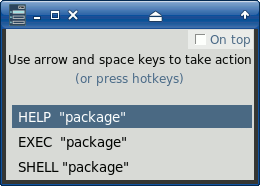
Click on the first item and you would see the Tcl/Tk help on package.
Step 2. Creating a menu.
Let's try and create a simple menu of 2 commands that would be available from Geany's context.
The menu file will be C:\UTILS\e_menu\menus\test.mnu. We shall use commands that process the editor's selected text to:
- seek the selected internet pages
- view the selected words in a dictionary
Fill the C:\UTILS\e_menu\menus\test.mnu with the following:
R/ Firefox search for "%s" R/ ""C:\Program Files (x86)\Mozilla Firefox\firefox.exe" -search "%s" RW/ Dictionary FVdict for "%s" RW/ cd C:\Program Files (x86)\FVdict RW/ Dictionary FVdict for "%s" RW/ fvdict.exe "%s"
(Here a fvdict dictionary is used. It's one of many similar dictionaries that accept a word as input argument and put out a translation of it. This one is English-Russian available at https://aplsimple.github.io/ru).
After that include the menu file into the call string of Geany's context, for example:
tclsh C:\UTILS\e_menu\e_menu.tcl "s=%s" h=C:\DOC\www.tcl.tk\man\tcl8.6 m=menus/test.mnu
NOTE: if you dislike to have the HELP/EXEC/SHELL commands in your menu though the context would be desirable, you can use:
- “s0=%s” instead of “s=%s” in Geany's context command
- %s0 instead of %s in menu commands
For example, you can write Geany's context command as:
tclsh C:\UTILS\e_menu\e_menu.tcl "s0=%s" m=menus/test.mnu
… and test.mnu as:
R/ Firefox search for "%s0" R/ "C:\Program Files (x86)\Mozilla Firefox\firefox.exe" -search "%s0" RW/ Dictionary FVdict for "%s0" RW/ cd C:\Program Files (x86)\FVdict RW/ Dictionary FVdict for "%s0" RW/ fvdict.exe "%s0"
… and then you should see:
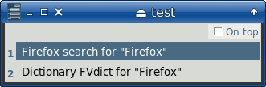
… instead of:
Try and seek the selected “Firefox” in WWW. Click the item named Firefox search for “Firefox” and you would see something like:

Step 3. Creating a submenu.
The e_menu's menus are hierarchical. You can include a submenu into any menu with the following e.g.:
MW/ Test4 menu MW/ "m=test4.mnu" o=0
NOTE: here “o=0” option means that the submenu doesn't contain the header i.e. those awful messages “Use arrow… (or press…”. Also notice that s0= option is passed to the submenu (as well as the other options of parent menu), and only m= and o= options were overridden for the child menu. In the example below the PD= option is added as well. The header is useful for mouse moving of menu, btw.
Let's create a submenu test4.mnu located at C:\UTILS\e_menu\menus.
However, at the beginning we should write it in the parent menu test.mnu so:
- test.mnu:
R/ Firefox search for "%s" R/ "C:\Program Files (x86)\Mozilla Firefox\firefox.exe" -search "%s" RW/ Dictionary FVdict for "%s" RW/ cd C:\Program Files (x86)\FVdict RW/ Dictionary FVdict for "%s" RW/ fvdict.exe %s MW/ Test4 menu MW/ "m=test4.mnu" "PD=C:\UTILS\e_menu\" o=0
After that if you clicked on the menu item, e_menu would offer to create the menu file. Answer “OK” and you'll get the following menu template:
R: nam1 R: prog S: nam2 S: comm MW: nam3 MW: m=e_menu/nam3.mnu
The template contains three most common types of records to fill a menu.
Now let's fill our submenu with the following:
- test4.mnu:
SW: echo %%s0 is %s0 SW: echo %%s0 is %s0 SW: echo %%PD is %PD SW: echo %%PD is %PD R: git init R: %Q "Init GIT" "Are you sure to init git in\n\n%PD ?" R: git init R: cd %PD S: git init S: git init R: git status R: cd %PD S: git status S: git status R: git gui R: cd %PD R: git gui R: git gui R: git add * R: cd %PD S: git add * S: git add * R: git commit -am '%s' R: %Q "Committing changes" "Do you really want to commit with message\n'%s' ?" R: git commit -am '%s' R: cd %PD S: git commit -am '%s' S: git commit -am "%s"
Call the Geany context action again. You should see the following:
After choosing “Test4 menu” you'll see the new submenu:
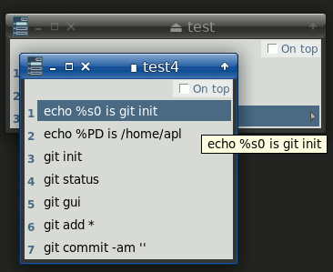
In the submenu you can play with its items. Notice that some git commands would require a confirmation. Also notice how a working directory is passed to the child menu with “PD=” argument and then used in its commands as “%PD” wildcard.
First items only echo the options passed to e_menu. Echos are useful for debugging btw. Other items refer to GIT system so that they would be working if you had installed GIT.
Using e_menu application
The e_menu usage is rather standard for menus.
The following keys take actions of menu:
- Down or Tab to select a next item
- Up or Shift+Tab to select a previous item
- Space, Enter, Return to execute a selected item
- hotkeys 1,2,3..a,b.. to execute items quickly
- hotkeys F1, F2, .. F12 (if set) to execute items quickly
- Esc to close a menu
The following hot keys can be also used:
- Ctrl+P to change a project's directory, set/view a menu's color scheme and geometry
- Ctrl+T to switch on/off 'stay on the top' mode
- Ctrl+E to edit a current menu file
- Ctrl+R to re-read a current menu file and restart its 'autorun' list
- Ctrl+D to delete other e_menu applications (sort of clearance)
- Ctrl+Right to increase a menu's width
- Ctrl+Left to decrease a menu's width
If not redefined in the menu, F1 calls 'About' dialog where 'Help' button displays this wiki.
You can use the right and the left arrow keys for calling and closing a submenu respectively.
The popup menu will appear after your right click. You can select the described actions from it.
Any menu can be dragged on the screen if it's grasped by the top space.
The internal editor of e_menu provides the popup menu and the following hot keys:
- Ctrl+D to double a current line or a selected text
- Ctrl+Y to delete a current line
- Alt+Up to move a current line or a selected text up
- Alt+Down to move a current line or a selected text down
- Ctrl+F to find a first occurence of string
- F3 to find a next occurence of string
- Ctrl+Z to undo changes
- Ctrl+Shift+Z to redo changes
- Ctrl+W to save and exit
- Esc to exit without saving
After saving a menu or executing an edited command (grep, wget), the edit position is saved in [OPTIONS] so that it's restored at editing next time.
Usage in editors and IDE
Some editors and IDE provide a full set of data for e_menu, while others only partly.
In general, any editor providing a sort of %f (and %s as desirable) wildcard for its external tools or plugins can take advantage of e_menu.
For example, Pluma, a text editor for MATE Desktop Environment, provides %f only. So, we can set in its menu
Service / Manage External Tools...a command like this:#!/bin/sh tclsh "~/PG/e_menu/e_menu.tcl" "md=~/DATA/e_menu/menus" m=menu.mnu "f=$PLUMA_CURRENT_DOCUMENT_PATH" "PD=~/PG/e_menu_PD.txt" s=? h=~/DOC/www.tcl.tk/man/tcl8.6
Almost the same settings are available in Gedit, a text editor for GNOME Desktop Environment. In its
External Tools, we can set a command like this:#!/bin/sh tclsh "~/PG/e_menu/e_menu.tcl" "md=~/DATA/e_menu/menus" m=menu.mnu "f=$GEDIT_CURRENT_DOCUMENT_PATH" "PD=~/PG/e_menu_PD.txt" s=? h=~/DOC/www.tcl.tk/man/tcl8.6
Of course, all pathes in the commands are specific for a machine.
Usage in alited editor
The alited is a natural editor for integrating with e_menu. After all, both have been written by the same guy, me:)
Thus, the description of alited is the best guide for using e_menu in it.
Here is presented alited's screenshot only, where the top toolbar contains e_menu by itself and other its tools:
Usage in TKE editor
For e_menu to be used in TKE editor, the TKE should be installed from .tgz archive (most likely, you would not be able to run e_menu from the stand-alone
tke.exein Windows). Then you should unpack the archive file and runtclsh install.tclunder the directory of unpacked TKE. If some Tcl packages were absent, the installer would notice it with its error messages. In those cases you should install the required package(s) and repeattclsh install.tclfor TKE.The main feature of e_menu in TKE is its implementation as TKE plugin. As a result, almost all of environment details presented by Tcl/Tk and TKE can be passed to e_menu as arguments (including s0-s9, x0-x9, y0-y9, z0-z9).
As for now available, the additional facilities include:
- executing the current Tcl script in tclsh (with selected text as arguments of script)
- executing the selected Tcl code in tclsh
- z6= argument equaling to a 'left' edited file (on TKE file bar); used to compare with current file
- z7= argument equaling to a 'right' edited file (on TKE file bar); used to compare with current file
- ts=1 argument when there is 'a real selected text' (not just a caret set on a word)
The last option is related to special comments in current text:
#ARGS0: arguments #ARGS1: arguments-1 #ARGS2: arguments-2 ... #ARGS99: arguments-99
The first found of such strings is used as arguments for calling 'Run me' of menu.mnu.
Others can be disabled for example this way:#-ARGS0: -k 1 test/test12ini #-ARGS1: -mode exact -backup 0 tasks/mulster-tke #ARGS10: -mode exact -backup 0 tasks/mulster-geany
Here only #ARGS10 would be used for the 'Run me' (as %AR wildcard) that in this case would run the edited mulster.tcl as follows:tclsh mulster.tcl -mode exact -backup 0 tasks/mulster-geany
If there is a real selection in TKE text, then ts=1 and %AR value equals to the selection. Thus, #ARGS doesn't work at the real selection of text.
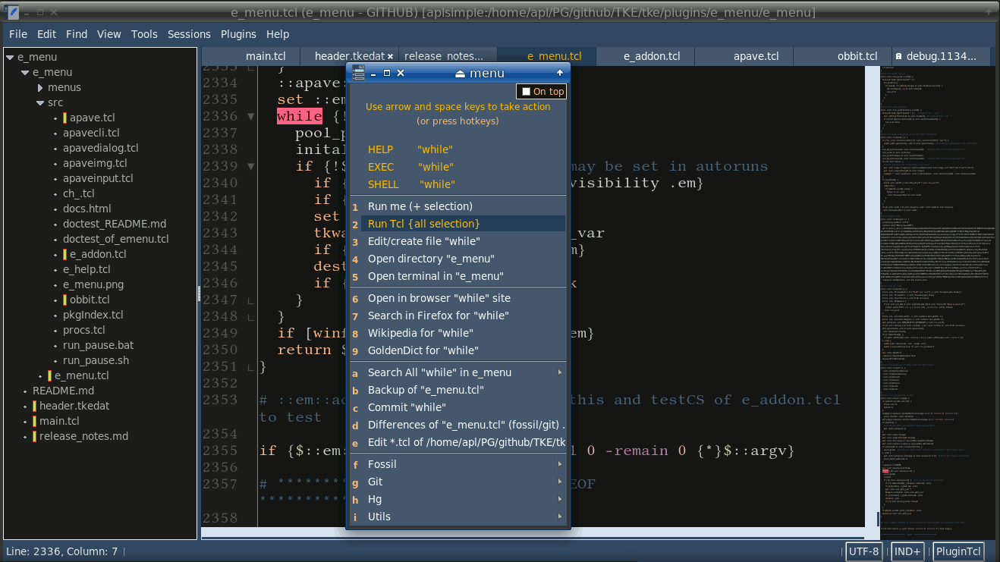
The "ts=" option of e_menu can be also used with Wing IDE, because of its cool API for plugin scripts.
There isn't a way to define "ts=" in PyCharm, Geany and Kate, thus the %AR wildcard of their e_menu can get only a #ARGS value.
TKE's e_menu provides TF=tempfile argument where tempfile is a name of temporary file containing all of selected text. It can be used (as %TF wildcard) by those commands that need the whole selection 'as is'. In TKE, s=%s argument supplies only first non-empty string of selection.
Another specific feature of TKE's e_menu is an option available in "Edit / Preferences / Plugins". This option switches on / off saving a current file before running the plugin.
Usage in Kate editor
For KDE Applications 19.12 release, it's possible to use External Tools in Kate editor. The tools may include e_menu as well.
The e_menu in Kate is customized this way:
- open Settings/ Configure Kate.../ External Tools
- add "e_menu" item to External tools
- enter the data for e_menu, mostly
tclshande_menu.tcl arguments
The arguments for
tclshmay be as follows:~/PG/e_menu/e_menu.tcl md=menus m=menu.mnu c=12 "f=%{Document:FilePath}" "s=%{Document:Selection:Text}" ln=%{Document:Cursor:Line}+1 cn=%{Document:Cursor:Column}+1Note: in Kate, lines and columns are numerated from 0, so that ln= and cn= arguments are incremented by 1.Other settings are seen in the picture below:
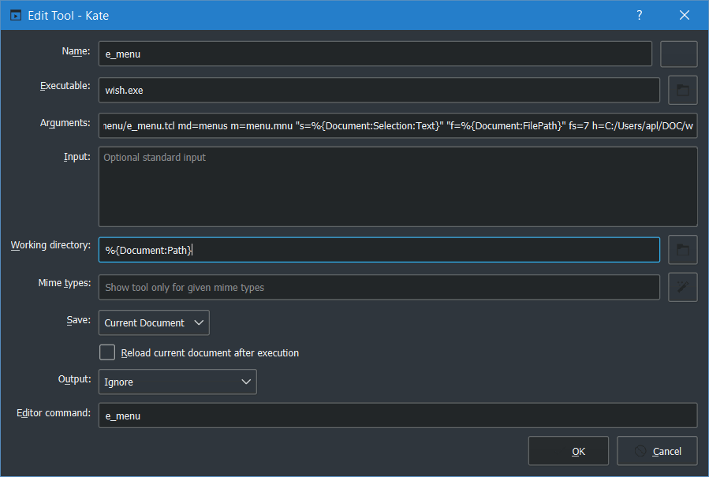
In Settings / Configure Keyboard Shortcuts, the shortcut for e_menu may be customized.And below is a picture of e_menu called from Kate:
Usage in Geany IDE
The main problem of using e_menu in Geany is that the official Geany doesn't provide %f and %d wildcards for the context command. As we've seen, these wildcards are of main interest for e_menu. See for example https://github.com/geany/geany/issues/1836.
Another issue of Geany is that its context command is disabled when %s (selected text) is empty. It's rather serious restriction for using e_menu. What if we want simply to view SCM status of project? For this action we need no selected text at all.
At last, Geany might save a current file before running the context command (if it includes %f, %d and other file-related wildcards), as it behaves before running Compile/Build/Run.
Shortly, our good old official Geany needs to be unofficialized a bit.
There is already a version of Geany with the proposed modification. Download its code by this link. Still, this version may be obsolete a little.
As for new versions of Geany, you can do the following:
- Clone Geany with:
git clone git://github.com/geany/geany.git geany
as recommended in: https://www.geany.org/Download/Git
- Download a tool to modify Geany's code, by the link mulster.zip.
- Replace all files in mulster/tasks/geany/src directory of unpacked mulster.zip with the Geany clone's ones (i.e. from geany/src).
- Run in console, under mulster directory, the following command:
tclsh mulster.tcl -mode exact -backup 0 tasks/mulster-geany
All replacements should be done, i.e. you should see all "Replacement #1: 1 done".
If any not done, the console messages notify about this. In such case, the whole quest is cancelled :((
- Copy all mulstered files from mulster/tasks/geany/mulstered back to geany/src).
On Linux, simply run the commands in geany directory:# possibly, "make distclean" is not mandatory for the last Geany versions make distclean ./autogen.sh ./configure # or possibly ./configure --disable-html-docs make sudo make install
While building Geany, note if any library is absent, by the final messages. If there is a warning about an absent library, it needs to be installed.
For Geany 1.36 in Debian 10, I had indeed to install a few packages, some of them were not of the same name as were messaged (synaptic being helpful at that).
Specifically, I'd installed:autoconf intltool libtool libglib2.0-dev libgtk-3-dev
Uff. Hopefully our efforts were successful and we can enjoy our good new Geany:
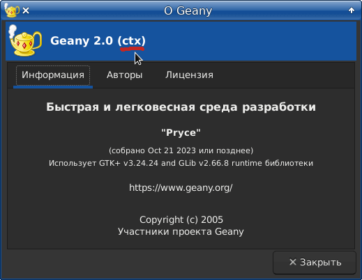
... as confirmed by the picture:
See also Introduction about customizing Geany's context action.
Usage in Wing IDE
Wing Python IDE provides so good API for extensions that making its e_menu plugin is nearly trivial. The flexible API allows Wing's plugins to implement the same things as TKE's ones do. Perhaps even more. For example, it's possible to separate a text selection from a simple placing the caret on a word.
Your actions in Wing may be as follows:
1. In scripts subdirectory of Wing's settings directory (e.g. the free Wing Personal 7 stores its settings in ~/.wingpersonal7) create the following emenu.py file:
import os
import wingapi
def emenu():
app = wingapi.gApplication
edi = app.GetActiveEditor()
doc = app.GetActiveDocument()
fnam = doc.GetFilename()
dnam = os.path.dirname(fnam)
start, end = edi.GetSelection() # positions of selection
ln = doc.GetLineNumberFromPosition(start) # current line
lstart = doc.GetLineStart(ln) # begin of current line
sel = doc.GetCharRange(start, end) # selected text
ts = 'ts=1'
if sel=='': # if no selection, get a current word under caret
ts = 'ts=0'
for i in range(start,lstart,-1):
ch = doc.GetCharRange(i-1,i)
if str.isalnum(ch) or ch=='_':
sel = ch+sel
else:
break
for i in range(start+1,doc.GetLineEnd(ln)+1):
ch = doc.GetCharRange(i-1,i)
if str.isalnum(ch) or ch=='_':
sel = sel+ch
else:
break
app.AsyncExecuteCommandLine('tclsh', '~', '/home/apl/.tke/e_menu/e_menu/e_menu.tcl', \
'md=~/.tke/plugins/e_menu/menus', 'm=menu.mnu', 'PD=~/PG/e_menu_PD.txt', 'c=17', \
's1='+dnam, "z5=~", ts, 'f='+fnam, 'TF='+fnam, 'd='+dnam, 's='+sel, 'h=~/DOC/www.tcl.tk/man/tcl8.6')
Note: you should write the correct pathes in the last line above, specifically for e_menu.tcl as well as md= and PD= arguments explained in Calling e_menu.
2. In Edit / Preferences menu item, select IDE Extension Scripting and insert a new record containing emenu.py (name of the script).
3. In Edit / Preferences menu item, select User interface / Keyboard and insert a new record containing:
- F1 (or Alt+M) - just press the key in Key field
- emenu in Command field
That's all. For calling e_menu press F1 (and/or Alt+M if you mapped so). Also you may run Edit / Command by Name menu item and enter emenu to call e_menu.
Thus, e_menu is available in Wing Personal 7:
By the way, I've found a rather annoying issue with Wing Python IDE in my Xfce WM, namely the Wing's window is enlarged from session to session (by 10 pixels to bottom and right). The following lines of Wing's project files (listed in ~/.wingpersonal7/recent-projects) are responsible for this artefact:
'window-alloc': (0,
26,
1506,
830)}]}
Of course, they are specific for each display. But once customized, these lines can be easily restored before running Wing, e.g. by the following command file:
#! /bin/bash
input="/home/me/.wingpersonal7/recent-projects"
while IFS= read -r line
do
line=${line:5:999}
tclsh ~/PG/mulster/mulster.tcl -backup ~/BAK -keep 1 -infile "$line" "~/PG/mulster/tasks/mulster-wing"
done < "$input"
wing-personal7.1 &
which uses the above mentioned mulster and its ini-file "~/PG/mulster/tasks/mulster-wing"containing:
# try #1
IN=BEGIN
'window-alloc': (0,
26,
1506,
830)}]}
IN=END
OUT=BEGIN
'window-alloc': (0,
26,
1486,
810)}]}
OUT=END
# try #2
IN=BEGIN
'window-alloc': (0,
26,
1496,
820)}]}
IN=END
OUT=BEGIN
'window-alloc': (0,
26,
1486,
810)}]}
OUT=END
Usage in PyCharm IDE
The great and awful PyCharm IDE would not be such that, if it couldn't provide a lot of facilities for extensions.
Our e_menu is plugged into PyCharm this way:
- Open File / Settings menu item.
- In Tools / External tools add a new record. Then enter the following:
- Name: emenu
- Description: blah-blah
- Program: tclsh
- Arguments: /home/apl/.tke/e_menu/e_menu/e_menu.tcl "md=~/.tke/plugins/e_menu/menus" m=menu.mnu "PD=~/PG/e_menu_PD.txt" "s1=$FileDir$" "z5=~" ln=$LineNumber$ cn=$ColumnNumber$ ts=1 "TF=$FilePath$" "f=$FilePath$" "d=$FileDir$" "s=$SelectedText$" "c=12"
(all pathes should be correct, specifically e_menu.tcl as well as md= and PD= arguments explained in Calling e_menu) - Working directory: $FileDir$
- Open console for tool output: unchecked (check only for debugging)
You may also customize the toolbar by right-clicking it and adding (Add after...) the External tools / emenu.
Thus, e_menu is available in PyCharm:
By the way, I didn't find the "current word under caret" among PyCharm's macros. It seems Wing is a good competitor for PyCharm as for extensions. Perhaps, for the rest as well.
Usage in file managers
There are at least four file managers that allow to run e_menu and apply its commands to files and directories.
1. The Caja file manager stores its scripts in the ~/.config/caja/scripts directory. Put there the following script:
#! /bin/bash # Runs e_menu. Install this into ~/.config/caja/scripts tclsh "~/.tke/e_menu/e_menu/e_menu.tcl" "md=~/.tke/plugins/e_menu/menus" m=menu.mnu \ "f=$CAJA_SCRIPT_SELECTED_FILE_PATHS" "d=$PWD" "PD=~/PG/e_menu_PD.txt" "s1=$PWD" \ "TF=$CAJA_SCRIPT_SELECTED_FILE_PATHS" "z2=$CAJA_SCRIPT_SELECTED_FILE_PATHS" "z5=~" "c=0" &... and call the script from Caja's popup menu to process a current file or directory with any thinkable command.
Thus, e_menu is available in Caja file manager:
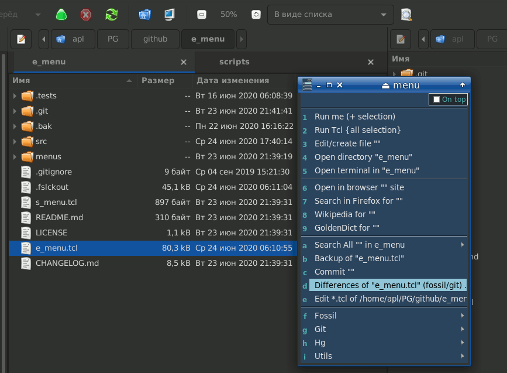
2. The Nautilus file manager stores its scripts in the ~/.local/share/nautilus/scripts directory. Put there the following script:
#! /bin/bash # Runs e_menu. Install this into ~/.local/share/nautilus/scripts tclsh "~/.tke/e_menu/e_menu/e_menu.tcl" "md=~/.tke/plugins/e_menu/menus" m=menu.mnu \ "f=$NAUTILUS_SCRIPT_SELECTED_FILE_PATHS" "d=$PWD" "PD=~/PG/e_menu_PD.txt" "s1=$PWD" \ "TF=$NAUTILUS_SCRIPT_SELECTED_FILE_PATHS" "z2=$NAUTILUS_SCRIPT_SELECTED_FILE_PATHS" "z5=~" "c=12" &... and call the script from Nautilus' popup menu to process a current file or directory with any thinkable command.
Thus, e_menu is available in Nautilus file manager:
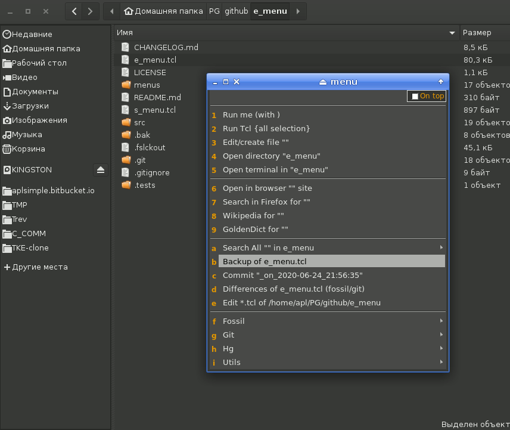
3. The Nemo file manager stores its scripts in the ~/.local/share/nemo/scripts directory. Put there the following script:
#! /bin/bash # Runs e_menu. Install this into ~/.local/share/nemo/scripts tclsh "~/.tke/e_menu/e_menu/e_menu.tcl" "md=~/.tke/plugins/e_menu/menus" m=menu.mnu \ "f=$NEMO_SCRIPT_SELECTED_FILE_PATHS" "d=$PWD" "PD=~/PG/e_menu_PD.txt" "s1=$PWD" \ "TF=$NEMO_SCRIPT_SELECTED_FILE_PATHS" "z2=$NEMO_SCRIPT_SELECTED_FILE_PATHS" "z5=~" "c=12" &... and call the script from Nemo's popup menu to process a current file or directory with any thinkable command.
Note: you should write the correct pathes in the above scripts, specifically for e_menu.tcl as well as md= and PD= arguments explained in Calling e_menu.
Thus, e_menu is available in Nemo file manager:
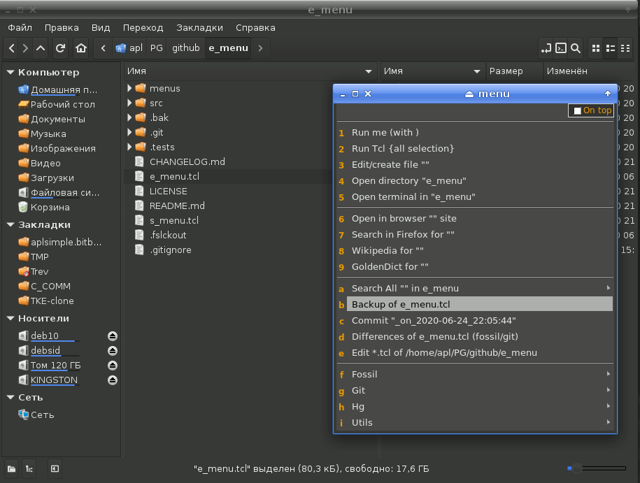
4. The Thunar file manager allows you to have the custom actions that are called with popup menu or with hotkeys.
You can enter the e_menu action by this way:
- choose "Edit / Configure custom actions..." Thunar menu item
- choose "Add a new custom action" (
+button) - enter the data of e_menu:
- Name:
e___menu(enter three "_" to view one) - Description:
any info - Command: something like
tclsh "~/PG/github/e_menu/e_menu.tcl" m=menu.mnu "f=%f" "d=%d" md=~/PG/e_menu/MNU/menus PD=~/PG/e_menu/PD.txt c=12 - Keyboard shortcut: press any keys in this field, e.g.
Alt+M - Icon: choose
src/e_menu.pngfrom e_menu directory - Appearance Conditions tab: check all checkboxes for opening e_menu on any files
Note: you should write the correct pathes in the above e_menu command, specifically for e_menu.tcl as well as md= and PD= arguments explained in Calling e_menu.
As you can see from the picture below, Thunar passes a file name in %f single-quoted. This peculiarity of Thunar is correctly handled in e_menu v1.43 or later.
Thus, e_menu is available in Thunar file manager:
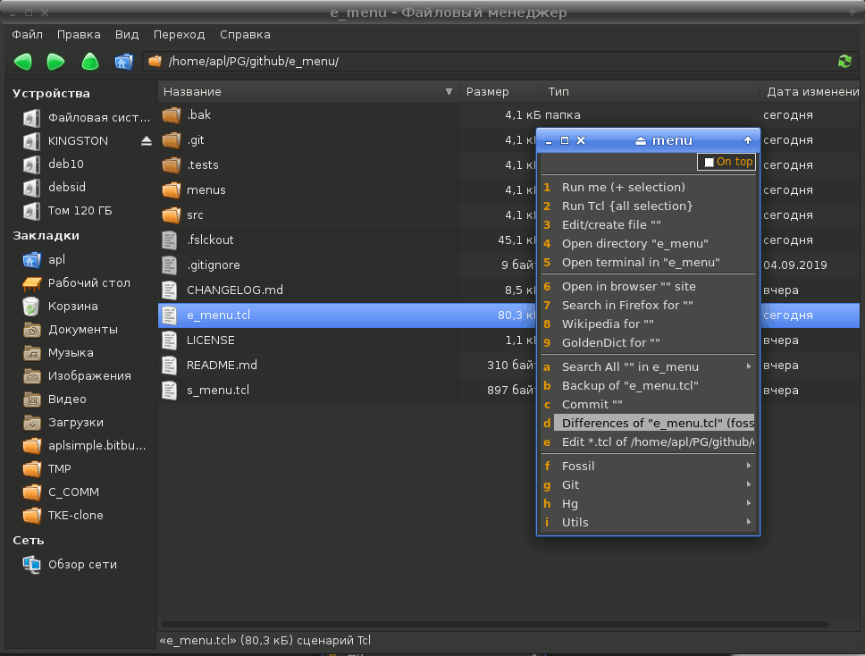
Usage in Tcl scripts
As mentioned above, instead of e_menu.tcl you can use s_menu.tcl or even a stand-alone e_menu executable which provides a single window e_menu application.
The main features of these two approaches:
- e_menu.tcl makes a separate application for each child menu, while s_menu.tcl makes a child menu in the same application
- thus, the performance of s_menu.tcl at creating child menus is better than e_menu.tcl's
- if "On top" mode is set, e_menu.tcl makes all hierarchy of menus to be visible; s_menu.tcl shows only a last level menu
- s_menu.tcl (or s_menu) is good to be called and to stay permanently on the screen, say, at right side; e_menu.tcl is good to be called from time to time
- the parent menus of both e_menu.tcl and s_menu.tcl behave independently on its children as for "Project..." settings
- e_menu.tcl allows to call e_menu as a "mega-widget" from your own Tcl/Tk code; at that e_menu.tcl behaves just like s_menu.tcl
The last feature is implemented as shown below:
set ::e_menu_dir "where e_menu.tcl is located" source [file join $::e_menu_dir e_menu.tcl] # ... ::em::main -prior 1 -modal 1 -remain 1 -noCS 1 \ "md=~/em/menus" m=utils.mnu "PD=PD.txt" \ "f=$filename" "s=$selection" \ h=~/DOC/www.tcl.tk/man/tcl8.6 t=1 w=25 g=+420+170
At first, you set ::e_menu_dir global variable to be equal a location of e_menu, then source e_menu.tcl.
To call e_menu, its ::em::main procedure is used. Its four options mean the following:
-prior 1allows to use variables' values and settings from a previous call-modal 1makes e_menu's window to be modal-remain 1allows to go through a whole hierarchy of menus down/up (a root menu to be closed only by force)-noCS 1disables changing a color scheme in "Project..." of e_menu
::em::main are options of e_menu.
If you use a color scheme of apave package, you should take into account a possibility of e_menu to change it. So, you should call ::em::main as follows:
set cs [pave csCurrent]
::em::main -prior 1 -modal 1 -remain 1 \
"md=~/em/menus" m=utils.mnu "PD=PD.txt" \
"f=$filename" "s=$selection" \
h=~/DOC/www.tcl.tk/man/tcl8.6 t=1 w=25 g=+420+170
set cs2 [pave csCurrent]
if {$cs!=$cs2} {
# some possible actions at changing CS
}
You can also disable the color scheme changes with -noCS 1 option. In that case, all of your menus should be of the same color scheme as your application or be not supplied with c= option at all.
Making menus project sensitive
1. %PN wildcard.
In the simplest case, e_menu allows to use a tail of working directory path as project name.
E.g. if you started a project like this:
cd /home/me/PG/projects/my_best_project
tclsh /home/me/UTILS/e_menu.tcl [...]
then my_best_project will be project name.
This name can be used as %PN wildcard in the calling string of e_menu as well as in the menu commands.
Note: you should use %%PN instead of %PN in Windows' command line.
So, you can have a lot of menus in %PN subdirectory of e_menu that are specific for your current project and the one and only Geany context command for all projects like this:
tclsh /home/me/UTILS/e_menu.tcl "s=%s" "m=%PN/main.mnu" ...
It would open the main menu of your current project as Geany's context command.
Also you can set in the calling string of e_menu “PN=projectname” argument that would override a value of %PN wildcard taken from a working directory. It may be suitable when your different projects are named equally (e.g. /…/Java/Project1 and /…/JavaScript/Project1).
2. %PD wildcard.
In the menus, the %PD wildcard is often used. It is defined as "a directory of current project". If you work with one project, you can rightly set the "PD=" argument of e_menu as "PD=your-project-dir".
But what if your edited files are from various projects (hence various directories)? In such case you may define "PD=" argument as a name of file containing the list of project directory names.
This is recommended and best way indeed. You run e_menu with the "PD=/home/me/PD-dirs.txt" argument where PD-dirs.txt contains for example:
# list of project directories for e_menu
# directory of various projects
/home/me/PG/projects/my_proj1
/home/me/PG/projects/my_proj2
/home/me/PG/projects/my_proj3
# directory of APP clone
/home/me/APP-clone/APP-clone
# directory of APP data (incl. config, plugins, themes)
/home/me/.APP
The blank lines and the # comments are ignored. All other lines are considered to be directory names of your projects.
When your edited file is located in one of those directories or its subdirectory, the root directory name is used as %PD wildcard of menu.
While editing a file you would not break your head with questions like "what a project is open? which project this file is of? is its project open? may I open files
from other projects?" and so on. The main thing is the registration of projects' directories in PD-dirs.txt or whatever it's named.
The e_menu would know the project your file is from and as such it would perform the commands related to your file and its project.
The corresponding tailing part of %PD is used as %PN wildcard.
3. "Project..." dialog.
The "Project..." dialog is open with pressing Ctrl+P or choosing "Project..." from the popup menu. It looks like this:
The upper combobox lists projects' directories of some PD.txt file that is passed to e_menu as PD= argument. This file may be edited just in the "Project..." dialog after clicking on the right button.
You can choose any project from the combobox which will be active (as %PD wildcard) throughout the menu and its children.
Other features of the "Project..." dialog allow:
- to change the menu's color scheme
- to change the menu's geometry
- to change the menu's type:
- topmost - to set it on the top of screen
- dialog - to set it as a standard dialog window
- dock - to set it as a dock window without a title
- desktop - to set it as a window on the desktop
The "Use it" checkboxes allow to save these settings in the menu's [OPTIONS] so that the settings will be applied to the next e_menu sessions.
For example, the dock type of e_menu looks like this:
on the right:
or over the editor:
Tips and hints
What's all those R, RE, RW, S, SE, SW, M, ME mean?
R stands for run a program by itself
S stands for run a command by shell in console
M stands for call a menu
E stands for exit after calling action
W stands for wait for completion of action (RW / SW)
Note:
- A first command in batch of commands sets the main "exit / no exit" mode (and "ornament" details).
For example, if there is the following batch of commands:
RE: Run me RE: cd %d
R: Run me R: command1
R: Run me R: command2
S: Run me S: shell_command
then the whole batch will be executed without exiting, but after the last shell_command the exit will be performed anyway.
- Any command in a batch can be of RE/SE type, which means that after its execution the exit will be performed immediately. Other commands will be unreachable.
- A bit peculiar is
%IF .. %THEN .. %ELSE command. If any clause of it (%THEN or %ELSE) were executed, it is considered being successful and other commands are skipped. At that, if the %IF command is set as RE/SE, the exit will be performed immediately after it.
- When "On top" mode is on, no exit is performed after RE:, SE: and ME:
commands. The menu will remain on the screen till you close it. It's useful when you want to access a whole hierarchy of menus.
- Starting from e_menu v3.0,
MW menu type is not actually used. It's equal to M type, i.e. a parent menu doesn't close and doesn't wait a child menu to be closed.
Changing menus' look and feel
Let me remind you how e_menu is called:
tclsh ~/UTILS/e_menu/e_menu.tcl "s=%s" "m=menu.mnu" [options]
where [options] can be set also in [OPTIONS] section of menu.mnu file.
The following call options of e_menu influence menus' look and feel:
- "n=title" sets a menu's title
- o=-1 - turns off the header's hint
- o=0 - turns off all of 'ornament' leaving a menu naked (minimalistic)
- o=1 - turns on the header of menu (default)
- o=2 - turns on prompts in menu items (RUN, EXEC, SHELL, MENU)
- o=3 - turns on all of 'ornament'
- dk=dialog - sets a dialog type of menu window (standard, with window's title)
- dk=dock - sets a dock type of menu window (without window's title)
- dk=desktop - places a menu on the desktop
- fs=12 - sets a font size of menu's header and items equal to 12
- “f1=Sans” - sets a font name of header to “Sans”
- “f2=Mono” - sets a font name of items to “Mono”
- “f3=Noto Sans Mono” - sets a font name of text widgets to “Noto Sans Mono”
- b0=1 sets a border width of menu items
- b1=1 sets an internal vertical padding of menu items
- b2=1 sets an internal horizontal padding of menu items
- b3=1 sets an external vertical padding of menu items
- b4=1 sets an external horizontal padding of menu items
- w=40 - sets a width of menu buttons (in characters); 40 is default
- g=+100+200 - positions a menu at x=100, y=200 coordinates of screen
- wc=1 centers a menu on the screen
- rt=3/5 sets a "min.width / init.width" ratio for a menu window
- t=1 - sets a menu as topmost over other windows on desktop
- sh=1 - allows to shade a menu when it loses a focus
- c=0 - sets an index of color scheme; to view all CS, open "Project..." of e_menu's popup menu
5th color scheme can be used to open a potentially dangerous menu, e.g. containing some dangerous or irrevocable commands and being as big as a monitor screen.
Before their calls, you can set a terrible warning, sort of:
If e_menu's colors aren't good for you (say, you want them fit your IDE), you can pass e_menu
the following arguments:
fg= foregroundbg= backgroundfI= active item foregroundbI= active item backgroundht= hotkey foregroundhh= header foregroundgr= shading backgroundfE= edit foregroundbE= edit backgroundfS= edit selection foregroundbS= edit selection backgroundfM= popup menu foregroundbM= popup menu backgroundcc= edit caret background
For example:
tclsh "~/PG/e_menu/e_menu.tcl" "md=~/PG/e_menu_MNU" m=menu.mnu \
fg=#d2d2d2 bg=#364c64 fI=#d2d2d2 bI=#1F2D3F ht=#FFA500 gr=grey \
fE=#aeaeae bE=#161717 fS=#d2d2d2 bS=#14416A cc=#00ffff sh=1
Counting and timing commands
You can use the following wildcards in menu commands:
- %t0 is a system time
- %t1 is a system date
- %t2 is a system date + time
- %t3 is a system day of week
- %i0
- %i1
- …
- %i9 - are counters of item runs
It's useful feature for commands that are logging or marking their data (files, directories etc.) with a current time, date and/or counter. There are 10 run counters per a menu and 10 time/date formats that can be set at call.
Here is a typical example:
git commit --amend -am "%s: amending N%i0 made at %t2"
- this git command would amend a last commit with a message sort of
"My_function_of_all: amending N3 made at 2018-03-31_14:15:07"
Starting menu items at intervals
You can also write a menu item so that it would be started periodically with an interval set in seconds.
Common usage is following:
<marker> name1 <marker> ?interval? command1
<marker> name1 <marker> command1 continued
where <marker> is R:, R/, S: or S/. Markers with E ('run and exit') and W ('run and wait') aren't badly reasonable. Maybe S: and S/ too. But R: and R/ is the point.
Examples:
R: Run periodic logging at 10 min. interval R: ?10*60? cd %PD
R: Run periodic logging at 10 min. interval R: logging
R: Run periodic archiving at 1 hour interval R: ?60*60? cd %PD
R: Run periodic archiving at 1 hour interval R: archiving
R: Run periodic messaging at 2 hour interval R: ?2*60*60? messaging
R: Run periodic reminding of rest at 45 min interval R: ?-45*60/-15*60? stopwork_arbeiten %TI
The last task should be explained in details. The common format of periodic command is following:
?NSEC/NSEC1:a=n1,n2/NSEC2:ah=n3,n4/.../TN=X:ah=n5/? TASK_COMMAND %TI
where:
- NSEC - interval in seconds to run TASK_COMMAND:
- if NSEC>0, TASK_COMMAND is executed immediately and then after NSEC seconds
- if NSEC<0, TASK_COMMAND is executed after abs(NSEC) seconds
- NSEC1, NSEC2 have the same meaning, but apply to a= (autorun list of commands) and ah= (autorun list of hidden commands)
- if a= and ah= are not present, the current command is called
- TN=X:ah=n5 means “after X cycles execute ah=n5 and stop”
- %TN is a wildcard that equals to the current cycle number
- %TI is a wildcard that equals to the current position in batch (while NSEC TI=0, while NSEC1 TI=1, while NSEC2 TI=2)
So the batch
?-45*60/-15*60? stopwork_arbeiten %TI
means:
- wait 45 minutes
- run “stopwork_arbeiten 0”
- wait 15 minutes
- run “stopwork_arbeiten 1”
- repeat all
We could easily set the task of theater show (taken from test3.mnu):
S: Comedy 'Miaou' S: ?-0.1/-20:a=/TN=3:ah=3/-0:ah=1/-10:ah=2/-3:ah=2/-3:a=? echo 'Miaou' part %TN \ndate
[HIDDEN]
S: Intermission S: echo Intermission %TN \ndate
S: Bell S: echo Bell N %TI-3 \ndate
S: Curtain S: echo Curtain \ndate
which means:
- comedy part 1 starts
- 20 seconds of part 1 showing
- intermission 1 starts
- 10 seconds of intermissing
- bell #1
- 3 seconds of intermissing
- bell #2
- 3 seconds of intermissing
- comedy part 2 starts
- 20 seconds of part 2 showing
- intermission 2 starts
- 10 seconds of intermissing
- bell #1
- 3 seconds of intermissing
- bell #2
- 3 seconds of intermissing
- comedy part 3 starts
- 20 seconds of part 3 showing
- curtain
Here is the show and even a spectator:)
You may desire to stop this periodical stuff manually. Just call it again and
e_menu would stop it on your confirmation. For now, there
are no possibility to stop a hidden autorun items.
Running commands at start
It's rather useful feature of e_menu allowing at start of a menu:
- to run any runnable item(s)
- to call any submenu(s)
- to run hidden command(s) or program(s)
Thus you can organize a menu system so there would be a starting menu that in turn would run and call all the rest (menus as well as commands).
Then, if you would desire to destroy and/or re-run the 'autorun' suite of menus, you may press Ctrl+D and/or Ctrl+R on the 'master' menu.
Let us have a laconic test.mnu:
R: Firefox search for "%s" R: firefox -search "%s"
MW: Test4 menu MW: "m=test4.mnu" o=0
[HIDDEN]
R: 1. tkcon R: tkcon
R: 2. Stop working! R: ?-33*60/-7*60:ah=3? audacious "/home/apl/PROGRAMS/C_COMM/breakon.wav"
R: 3. Arbeiten! R: audacious "/home/apl/PROGRAMS/C_COMM/breakoff.wav"
We can call it this way:
tclsh ~/UTILS/e_menu/e_menu/e_menu.tcl m=test.mnu ah=1,2 &
...and would have tkcon started, as well as periodic music sort of
"Stop working!... Arbeiten!... Stop working!... Arbeiten!...".
Another example. We have a startup batch file with the following lines (ornaments omitted):
cd %DIR%
start tclsh %EMDIR%/e_menu.tcl "m=menu.mnu"
start cmd.exe /c "C:\Program Files (x86)\Geany\bin\geany.exe" readme.md wiki.txt e_help.tcl e_menu.tcl
The problem is the last line. We might probe also these command lines:
1. start cmd.exe /c "C:\Program Files (x86)\Geany\bin\geany.exe" readme.md wiki.txt e_help.tcl e_menu.tcl
2. start "C:\Program Files (x86)\Geany\bin\geany.exe" readme.md wiki.txt e_help.tcl e_menu.tcl
3. start "C:\\Program Files\ (x86)\\Geany\\bin\geany.exe" readme.md wiki.txt e_help.tcl e_menu.tcl
4. start "C:/Program Files (x86)/Geany/bin/geany.exe" readme.md wiki.txt e_help.tcl e_menu.tcl
5. start /D "C:\Program Files (x86)\Geany\bin" geany.exe readme.md wiki.txt e_help.tcl e_menu.tcl
6. start /D "C:\Program Files (x86)\Geany\bin" geany.exe %DIR%/readme.md %DIR%\wiki.txt %DIR%\e_help.tcl %DIR%\e_menu.tcl
1st case is OK excluding that hideous box of cmd.exe.
2nd, 3rd, 4th commands fail at all.
5th is OK but files (readme.md etc.) are open as new ones (in C:\Program Files (x86)\Geany\bin)
6th is OK but a working directory changes to C:\Program Files (x86)\Geany\bin. Not to say about those repeating %DIR%. S… again!
The problem is resolved with the 7th line (as 'start' accepts optional “header” … or accepts not in case of cmd.exe):
7. start "" /b "C:\Program Files (x86)\Geany\bin\geany.exe" readme.md wiki.txt e_help.tcl e_menu.tcl
Uff, what titanic efforts we have taken while all we need is our good old e_menu. Let's do so:
Insert into “menu.mnu” the following line (it will be useful by itself in future):
R/ Open all R/ "C:\Program Files (x86)\Geany\bin\geany.exe" readme.md wiki.txt e_help.tcl e_menu.tcl
… and assuming that “Open all” entry is number 8 in menu.mnu, change the e_menu call so:
start tclsh e_menu.tcl "m=menu.mnu" a=8
That's all. Minus a special start of Geany in batch file. Plus a useful menu command that allows to restore our project file list in Geany IDE.
Closing all menus
Sometimes you might desire to close all e_menu applications. To do this, press Ctrl+D keys.
A query would occur asking you to confirm closing all menus. Press OK to close all of them. A current menu ("menu destroyer") should close all e_menu applications excepting itself.
You can control this behaviour with assigning 'id' to menus by N=id (id=1..64) option of call. A menu destroyer normally doesn't kill a menu if its 'id' is greater than 64 (e.g. N=65 passed). Also it doesn't kill itself, if it is a parent and has a g= (geometry) option passed.
However, it's worth noticing that this feature is buggy under Linux and generally doesn't work under Windows.
Logging and debugging
When executing a command, e_menu puts out a message to stdout:
menu - oper: number
where:
menu - menu's name
oper - operation (Run, Shell)
number - index of executed item
The executed command can also put its own messages to stdout.
This output can be redirected to a logging file by means of > or >>, for example this way:
tclsh ~/e_menu/e_menu.tcl "s=%s" "m=menus/menu.mnu" >> ~/e_menu/e_menu.log
Normally no error messages are displayed while e_menu running commands. There are many useful programs that return some warning mess as if it were errors. This unnecessary trash is thrown off by e_menu.
However, sometimes you need those error messages. E.g. you wrote a menu item that doesn't work stubbornly and is silent at that. What's up? In such case you can get over the silence of e_menu with setting “?” before the first command of batch, for example:
R: TEST1 R: cd %PD
R: TEST1 R: not_existing_command
R: TEST2 R: cd %PD
R: TEST2 R: ? not_existing_command
R: TEST3 R: ? cd %PD
R: TEST3 R: not_existing_command
Of these items, only TEST3 would show the error message:
ERROR of running
not_existing_command
couldn't execute "not_existing_command": no such file or directory
If your calling e_menu fails at start, you can call it in console so
that you would see its error messages. You can use also a0=, a1=, a2= arguments
to check if your starting list (a=) is run properly. See Calling e_menu above.
A command useful for debugging is a console echo if properly included in a menu, e.g.:
S: Echo: %%s1 S: echo %s1
M and S commands can be used in a0=, a1=, a2= arguments to show messages and run commands in console, e.g.:
"a0=M starting e_menu" "a1=M start inits" "a2=M end of inits"
Running by tclkits
If you use a stand-alone tclkit instead of fully installed Tcl/Tk, run e_menu with a command:
tclkit ~/PG/e_menu/e_menu.tcl "m=menus/menu.mnu"
Also, you might want to have a shortcut to run this tclkit as Tcl/Tk by itself. If so, in Linux, make a command file like that:
#! /bin/bash
# supposing our tclkit is in /usr/local/bin:
/usr/local/bin/tclkit $@ &
Save this command file as tcl. In Windows, it can be easily imitated by tcl.bat:
@echo off
start C:\MyUtils\tclkit.exe %*
To have e_menu run this tcl in its menu commands that start with tclsh / wish, use tc= option:
tcl ~/PG/e_menu/e_menu.tcl "m=menus/menu.mnu" tc=tcl
By the way, you can have Tcl/Tk fully installed and still prefer to run e_menu by a tclkit (say, of some specific version).
If you want to force running tclsh or wish of a menu item, just quote them:
R: ruler R: "wish" /usr/share/tcltk/tklib0.7/widget/ruler.tcl
# instead of
R: ruler R: wish /usr/share/tcltk/tklib0.7/widget/ruler.tcl
Download
e_menu stuff is available here:
-
e_menu.zip
-
e_menu's git repo
-
e_menu executables for Linux and Windows
-
See also
The links about and around e_menu:
-
-
-
-
- mild-dark color scheme for Kate
- mild-dark color scheme for Geany
- sort of history:
-
-
-
-
1. %PN wildcard.
In the simplest case, e_menu allows to use a tail of working directory path as project name.
E.g. if you started a project like this:
cd /home/me/PG/projects/my_best_project tclsh /home/me/UTILS/e_menu.tcl [...]
then my_best_project will be project name.
This name can be used as %PN wildcard in the calling string of e_menu as well as in the menu commands.
Note: you should use %%PN instead of %PN in Windows' command line.
So, you can have a lot of menus in %PN subdirectory of e_menu that are specific for your current project and the one and only Geany context command for all projects like this:
tclsh /home/me/UTILS/e_menu.tcl "s=%s" "m=%PN/main.mnu" ...
It would open the main menu of your current project as Geany's context command.
Also you can set in the calling string of e_menu “PN=projectname” argument that would override a value of %PN wildcard taken from a working directory. It may be suitable when your different projects are named equally (e.g. /…/Java/Project1 and /…/JavaScript/Project1).
2. %PD wildcard.
In the menus, the %PD wildcard is often used. It is defined as "a directory of current project". If you work with one project, you can rightly set the "PD=" argument of e_menu as "PD=your-project-dir".
But what if your edited files are from various projects (hence various directories)? In such case you may define "PD=" argument as a name of file containing the list of project directory names.
This is recommended and best way indeed. You run e_menu with the "PD=/home/me/PD-dirs.txt" argument where PD-dirs.txt contains for example:
# list of project directories for e_menu # directory of various projects /home/me/PG/projects/my_proj1 /home/me/PG/projects/my_proj2 /home/me/PG/projects/my_proj3 # directory of APP clone /home/me/APP-clone/APP-clone # directory of APP data (incl. config, plugins, themes) /home/me/.APP
The blank lines and the # comments are ignored. All other lines are considered to be directory names of your projects.
When your edited file is located in one of those directories or its subdirectory, the root directory name is used as %PD wildcard of menu.
While editing a file you would not break your head with questions like "what a project is open? which project this file is of? is its project open? may I open files from other projects?" and so on. The main thing is the registration of projects' directories in PD-dirs.txt or whatever it's named. The e_menu would know the project your file is from and as such it would perform the commands related to your file and its project.
The corresponding tailing part of %PD is used as %PN wildcard.
3. "Project..." dialog.
The "Project..." dialog is open with pressing Ctrl+P or choosing "Project..." from the popup menu. It looks like this:
The upper combobox lists projects' directories of some PD.txt file that is passed to e_menu as PD= argument. This file may be edited just in the "Project..." dialog after clicking on the right button.
You can choose any project from the combobox which will be active (as %PD wildcard) throughout the menu and its children.
Other features of the "Project..." dialog allow:
- to change the menu's color scheme
- to change the menu's geometry
- to change the menu's type:
- topmost - to set it on the top of screen
- dialog - to set it as a standard dialog window
- dock - to set it as a dock window without a title
- desktop - to set it as a window on the desktop
The "Use it" checkboxes allow to save these settings in the menu's [OPTIONS] so that the settings will be applied to the next e_menu sessions.
For example, the dock type of e_menu looks like this:
on the right: or over the editor:
R stands for run a program by itself
S stands for run a command by shell in console
M stands for call a menu
E stands for exit after calling action
W stands for wait for completion of action (RW / SW)
Note:
- A first command in batch of commands sets the main "exit / no exit" mode (and "ornament" details).
For example, if there is the following batch of commands:
RE: Run me RE: cd %d R: Run me R: command1 R: Run me R: command2 S: Run me S: shell_command
then the whole batch will be executed without exiting, but after the lastshell_commandthe exit will be performed anyway. - Any command in a batch can be of RE/SE type, which means that after its execution the exit will be performed immediately. Other commands will be unreachable.
- A bit peculiar is
%IF .. %THEN .. %ELSEcommand. If any clause of it (%THENor%ELSE) were executed, it is considered being successful and other commands are skipped. At that, if the%IFcommand is set as RE/SE, the exit will be performed immediately after it. - When "On top" mode is on, no exit is performed after RE:, SE: and ME: commands. The menu will remain on the screen till you close it. It's useful when you want to access a whole hierarchy of menus.
- Starting from e_menu v3.0,
MWmenu type is not actually used. It's equal toMtype, i.e. a parent menu doesn't close and doesn't wait a child menu to be closed.
Let me remind you how e_menu is called:
tclsh ~/UTILS/e_menu/e_menu.tcl "s=%s" "m=menu.mnu" [options]where
[options] can be set also in [OPTIONS] section of menu.mnu file.
The following call options of e_menu influence menus' look and feel:
- "n=title" sets a menu's title
- o=-1 - turns off the header's hint
- o=0 - turns off all of 'ornament' leaving a menu naked (minimalistic)
- o=1 - turns on the header of menu (default)
- o=2 - turns on prompts in menu items (RUN, EXEC, SHELL, MENU)
- o=3 - turns on all of 'ornament'
- dk=dialog - sets a dialog type of menu window (standard, with window's title)
- dk=dock - sets a dock type of menu window (without window's title)
- dk=desktop - places a menu on the desktop
- fs=12 - sets a font size of menu's header and items equal to 12
- “f1=Sans” - sets a font name of header to “Sans”
- “f2=Mono” - sets a font name of items to “Mono”
- “f3=Noto Sans Mono” - sets a font name of text widgets to “Noto Sans Mono”
- b0=1 sets a border width of menu items
- b1=1 sets an internal vertical padding of menu items
- b2=1 sets an internal horizontal padding of menu items
- b3=1 sets an external vertical padding of menu items
- b4=1 sets an external horizontal padding of menu items
- w=40 - sets a width of menu buttons (in characters); 40 is default
- g=+100+200 - positions a menu at x=100, y=200 coordinates of screen
- wc=1 centers a menu on the screen
- rt=3/5 sets a "min.width / init.width" ratio for a menu window
- t=1 - sets a menu as topmost over other windows on desktop
- sh=1 - allows to shade a menu when it loses a focus
- c=0 - sets an index of color scheme; to view all CS, open "Project..." of e_menu's popup menu
5th color scheme can be used to open a potentially dangerous menu, e.g. containing some dangerous or irrevocable commands and being as big as a monitor screen.
Before their calls, you can set a terrible warning, sort of:
If e_menu's colors aren't good for you (say, you want them fit your IDE), you can pass e_menu the following arguments:
fg=foregroundbg=backgroundfI=active item foregroundbI=active item backgroundht=hotkey foregroundhh=header foregroundgr=shading backgroundfE=edit foregroundbE=edit backgroundfS=edit selection foregroundbS=edit selection backgroundfM=popup menu foregroundbM=popup menu backgroundcc=edit caret background
tclsh "~/PG/e_menu/e_menu.tcl" "md=~/PG/e_menu_MNU" m=menu.mnu \ fg=#d2d2d2 bg=#364c64 fI=#d2d2d2 bI=#1F2D3F ht=#FFA500 gr=grey \ fE=#aeaeae bE=#161717 fS=#d2d2d2 bS=#14416A cc=#00ffff sh=1
You can use the following wildcards in menu commands:
- %t0 is a system time
- %t1 is a system date
- %t2 is a system date + time
- %t3 is a system day of week
- %i0
- %i1
- …
- %i9 - are counters of item runs
It's useful feature for commands that are logging or marking their data (files, directories etc.) with a current time, date and/or counter. There are 10 run counters per a menu and 10 time/date formats that can be set at call.
Here is a typical example:
git commit --amend -am "%s: amending N%i0 made at %t2"
- this git command would amend a last commit with a message sort of
"My_function_of_all: amending N3 made at 2018-03-31_14:15:07"
You can also write a menu item so that it would be started periodically with an interval set in seconds.
Common usage is following:
<marker> name1 <marker> ?interval? command1 <marker> name1 <marker> command1 continued
where <marker> is R:, R/, S: or S/. Markers with E ('run and exit') and W ('run and wait') aren't badly reasonable. Maybe S: and S/ too. But R: and R/ is the point.
Examples:
R: Run periodic logging at 10 min. interval R: ?10*60? cd %PD R: Run periodic logging at 10 min. interval R: logging R: Run periodic archiving at 1 hour interval R: ?60*60? cd %PD R: Run periodic archiving at 1 hour interval R: archiving R: Run periodic messaging at 2 hour interval R: ?2*60*60? messaging R: Run periodic reminding of rest at 45 min interval R: ?-45*60/-15*60? stopwork_arbeiten %TI
The last task should be explained in details. The common format of periodic command is following:
?NSEC/NSEC1:a=n1,n2/NSEC2:ah=n3,n4/.../TN=X:ah=n5/? TASK_COMMAND %TI
where:
- NSEC - interval in seconds to run TASK_COMMAND:
- if NSEC>0, TASK_COMMAND is executed immediately and then after NSEC seconds
- if NSEC<0, TASK_COMMAND is executed after abs(NSEC) seconds
- NSEC1, NSEC2 have the same meaning, but apply to a= (autorun list of commands) and ah= (autorun list of hidden commands)
- if a= and ah= are not present, the current command is called
- TN=X:ah=n5 means “after X cycles execute ah=n5 and stop”
- %TN is a wildcard that equals to the current cycle number
- %TI is a wildcard that equals to the current position in batch (while NSEC TI=0, while NSEC1 TI=1, while NSEC2 TI=2)
So the batch
?-45*60/-15*60? stopwork_arbeiten %TI
means:
- wait 45 minutes
- run “stopwork_arbeiten 0”
- wait 15 minutes
- run “stopwork_arbeiten 1”
- repeat all
We could easily set the task of theater show (taken from test3.mnu):
S: Comedy 'Miaou' S: ?-0.1/-20:a=/TN=3:ah=3/-0:ah=1/-10:ah=2/-3:ah=2/-3:a=? echo 'Miaou' part %TN \ndate [HIDDEN] S: Intermission S: echo Intermission %TN \ndate S: Bell S: echo Bell N %TI-3 \ndate S: Curtain S: echo Curtain \ndate
which means:
- comedy part 1 starts
- 20 seconds of part 1 showing
- intermission 1 starts
- 10 seconds of intermissing
- bell #1
- 3 seconds of intermissing
- bell #2
- 3 seconds of intermissing
- comedy part 2 starts
- 20 seconds of part 2 showing
- intermission 2 starts
- 10 seconds of intermissing
- bell #1
- 3 seconds of intermissing
- bell #2
- 3 seconds of intermissing
- comedy part 3 starts
- 20 seconds of part 3 showing
- curtain
Here is the show and even a spectator:)
You may desire to stop this periodical stuff manually. Just call it again and e_menu would stop it on your confirmation. For now, there are no possibility to stop a hidden autorun items.
It's rather useful feature of e_menu allowing at start of a menu:
- to run any runnable item(s)
- to call any submenu(s)
- to run hidden command(s) or program(s)
Thus you can organize a menu system so there would be a starting menu that in turn would run and call all the rest (menus as well as commands).
Then, if you would desire to destroy and/or re-run the 'autorun' suite of menus, you may press Ctrl+D and/or Ctrl+R on the 'master' menu.
Let us have a laconic test.mnu:
R: Firefox search for "%s" R: firefox -search "%s" MW: Test4 menu MW: "m=test4.mnu" o=0 [HIDDEN] R: 1. tkcon R: tkcon R: 2. Stop working! R: ?-33*60/-7*60:ah=3? audacious "/home/apl/PROGRAMS/C_COMM/breakon.wav" R: 3. Arbeiten! R: audacious "/home/apl/PROGRAMS/C_COMM/breakoff.wav"We can call it this way:
tclsh ~/UTILS/e_menu/e_menu/e_menu.tcl m=test.mnu ah=1,2 &...and would have tkcon started, as well as periodic music sort of "Stop working!... Arbeiten!... Stop working!... Arbeiten!...".
Another example. We have a startup batch file with the following lines (ornaments omitted):
cd %DIR% start tclsh %EMDIR%/e_menu.tcl "m=menu.mnu" start cmd.exe /c "C:\Program Files (x86)\Geany\bin\geany.exe" readme.md wiki.txt e_help.tcl e_menu.tcl
The problem is the last line. We might probe also these command lines:
1. start cmd.exe /c "C:\Program Files (x86)\Geany\bin\geany.exe" readme.md wiki.txt e_help.tcl e_menu.tcl 2. start "C:\Program Files (x86)\Geany\bin\geany.exe" readme.md wiki.txt e_help.tcl e_menu.tcl 3. start "C:\\Program Files\ (x86)\\Geany\\bin\geany.exe" readme.md wiki.txt e_help.tcl e_menu.tcl 4. start "C:/Program Files (x86)/Geany/bin/geany.exe" readme.md wiki.txt e_help.tcl e_menu.tcl 5. start /D "C:\Program Files (x86)\Geany\bin" geany.exe readme.md wiki.txt e_help.tcl e_menu.tcl 6. start /D "C:\Program Files (x86)\Geany\bin" geany.exe %DIR%/readme.md %DIR%\wiki.txt %DIR%\e_help.tcl %DIR%\e_menu.tcl
1st case is OK excluding that hideous box of cmd.exe.
2nd, 3rd, 4th commands fail at all.
5th is OK but files (readme.md etc.) are open as new ones (in C:\Program Files (x86)\Geany\bin)
6th is OK but a working directory changes to C:\Program Files (x86)\Geany\bin. Not to say about those repeating %DIR%. S… again!
The problem is resolved with the 7th line (as 'start' accepts optional “header” … or accepts not in case of cmd.exe):
7. start "" /b "C:\Program Files (x86)\Geany\bin\geany.exe" readme.md wiki.txt e_help.tcl e_menu.tcl
Uff, what titanic efforts we have taken while all we need is our good old e_menu. Let's do so:
Insert into “menu.mnu” the following line (it will be useful by itself in future):
R/ Open all R/ "C:\Program Files (x86)\Geany\bin\geany.exe" readme.md wiki.txt e_help.tcl e_menu.tcl
… and assuming that “Open all” entry is number 8 in menu.mnu, change the e_menu call so:
start tclsh e_menu.tcl "m=menu.mnu" a=8
That's all. Minus a special start of Geany in batch file. Plus a useful menu command that allows to restore our project file list in Geany IDE.
Sometimes you might desire to close all e_menu applications. To do this, press Ctrl+D keys.
A query would occur asking you to confirm closing all menus. Press OK to close all of them. A current menu ("menu destroyer") should close all e_menu applications excepting itself.
You can control this behaviour with assigning 'id' to menus by N=id (id=1..64) option of call. A menu destroyer normally doesn't kill a menu if its 'id' is greater than 64 (e.g. N=65 passed). Also it doesn't kill itself, if it is a parent and has a g= (geometry) option passed.
However, it's worth noticing that this feature is buggy under Linux and generally doesn't work under Windows.
When executing a command, e_menu puts out a message to stdout:
menu - oper: number
where:
menu - menu's name
oper - operation (Run, Shell)
number - index of executed item
The executed command can also put its own messages to stdout.
This output can be redirected to a logging file by means of > or >>, for example this way:
tclsh ~/e_menu/e_menu.tcl "s=%s" "m=menus/menu.mnu" >> ~/e_menu/e_menu.log
Normally no error messages are displayed while e_menu running commands. There are many useful programs that return some warning mess as if it were errors. This unnecessary trash is thrown off by e_menu.
However, sometimes you need those error messages. E.g. you wrote a menu item that doesn't work stubbornly and is silent at that. What's up? In such case you can get over the silence of e_menu with setting “?” before the first command of batch, for example:
R: TEST1 R: cd %PD R: TEST1 R: not_existing_command R: TEST2 R: cd %PD R: TEST2 R: ? not_existing_command R: TEST3 R: ? cd %PD R: TEST3 R: not_existing_command
Of these items, only TEST3 would show the error message:
ERROR of running not_existing_command couldn't execute "not_existing_command": no such file or directory
If your calling e_menu fails at start, you can call it in console so that you would see its error messages. You can use also a0=, a1=, a2= arguments to check if your starting list (a=) is run properly. See Calling e_menu above.
A command useful for debugging is a console echo if properly included in a menu, e.g.:
S: Echo: %%s1 S: echo %s1
M and S commands can be used in a0=, a1=, a2= arguments to show messages and run commands in console, e.g.:
"a0=M starting e_menu" "a1=M start inits" "a2=M end of inits"
If you use a stand-alone tclkit instead of fully installed Tcl/Tk, run e_menu with a command:
tclkit ~/PG/e_menu/e_menu.tcl "m=menus/menu.mnu"
Also, you might want to have a shortcut to run this tclkit as Tcl/Tk by itself. If so, in Linux, make a command file like that:
#! /bin/bash # supposing our tclkit is in /usr/local/bin: /usr/local/bin/tclkit $@ &
Save this command file as tcl. In Windows, it can be easily imitated by tcl.bat:
@echo off start C:\MyUtils\tclkit.exe %*
To have e_menu run this tcl in its menu commands that start with tclsh / wish, use tc= option:
tcl ~/PG/e_menu/e_menu.tcl "m=menus/menu.mnu" tc=tcl
By the way, you can have Tcl/Tk fully installed and still prefer to run e_menu by a tclkit (say, of some specific version).
If you want to force running tclsh or wish of a menu item, just quote them:
R: ruler R: "wish" /usr/share/tcltk/tklib0.7/widget/ruler.tcl # instead of R: ruler R: wish /usr/share/tcltk/tklib0.7/widget/ruler.tcl
e_menu stuff is available here:
- e_menu.zip
- e_menu's git repo
- e_menu executables for Linux and Windows
-
See also
The links about and around e_menu:
- mild-dark color scheme for Kate
- mild-dark color scheme for Geany
- sort of history:
-